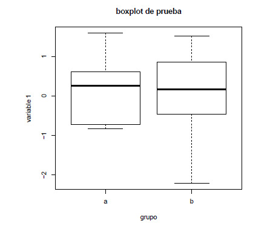
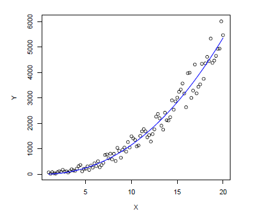

<!doctype html>
<html >
<head>
    
    <meta name="viewport" content="width=device-width, initial-scale=1.0" />
        <!--[if lt IE 9]>
                <script src="http://css3-mediaqueries-js.googlecode.com/svn/trunk/css3-mediaqueries.js"></script>
        <![endif]-->
    <meta http-equiv="Content-Type" content="text/html; charset=utf-8" />
    <meta http-equiv="Content-Style-Type" content="text/css" />

    <!-- <link rel="stylesheet" type="text/css" href="template.css" /> -->
    <link rel="stylesheet" type="text/css" href="https://cdn.jsdelivr.net/gh/diversen/pandoc-bootstrap-adaptive-template@959c3622/template.css" />

    <link href="https://vjs.zencdn.net/5.4.4/video-js.css" rel="stylesheet" />

    <script src="https://code.jquery.com/jquery-2.2.1.min.js"></script>
    <!-- <script type='text/javascript' src='menu/js/jquery.cookie.js'></script> -->
    <!-- <script type='text/javascript' src='menu/js/jquery.hoverIntent.minified.js'></script> -->
    <!-- <script type='text/javascript' src='menu/js/jquery.dcjqaccordion.2.7.min.js'></script> -->

    <!-- <link href="menu/css/skins/blue.css" rel="stylesheet" type="text/css" /> -->
    <!-- <link href="menu/css/skins/graphite.css" rel="stylesheet" type="text/css" /> -->
    <!-- <link href="menu/css/skins/grey.css" rel="stylesheet" type="text/css" /> -->
  
    <!-- <script src="https://cdn.mathjax.org/mathjax/latest/MathJax.js?config=TeX-AMS-MML_HTMLorMML"></script> -->
        
  
    <!-- <script src="script.js"></script> -->
  
    <!-- <script src="jquery.sticky-kit.js "></script> -->
    <script type='text/javascript' src='https://cdn.jsdelivr.net/gh/diversen/pandoc-bootstrap-adaptive-template@959c3622/menu/js/jquery.cookie.js'></script>
    <script type='text/javascript' src='https://cdn.jsdelivr.net/gh/diversen/pandoc-bootstrap-adaptive-template@959c3622/menu/js/jquery.hoverIntent.minified.js'></script>
    <script type='text/javascript' src='https://cdn.jsdelivr.net/gh/diversen/pandoc-bootstrap-adaptive-template@959c3622/menu/js/jquery.dcjqaccordion.2.7.min.js'></script>

    <link href="https://cdn.jsdelivr.net/gh/diversen/pandoc-bootstrap-adaptive-template@959c3622/menu/css/skins/blue.css" rel="stylesheet" type="text/css" />
    <link href="https://cdn.jsdelivr.net/gh/diversen/pandoc-bootstrap-adaptive-template@959c3622/menu/css/skins/graphite.css" rel="stylesheet" type="text/css" />
    <link href="https://cdn.jsdelivr.net/gh/diversen/pandoc-bootstrap-adaptive-template@959c3622/menu/css/skins/grey.css" rel="stylesheet" type="text/css" />
    <link href="https://cdn.jsdelivr.net/gh/ryangrose/easy-pandoc-templates@948e28e5/css/elegant_bootstrap.css" rel="stylesheet" type="text/css" />
  
    <script src="https://cdnjs.cloudflare.com/ajax/libs/mathjax/2.7.4/MathJax.js?config=TeX-AMS-MML_HTMLorMML"></script>
  
    <script src="https://cdn.jsdelivr.net/gh/diversen/pandoc-bootstrap-adaptive-template@959c3622/script.js"></script>
  
    <script src="https://cdn.jsdelivr.net/gh/diversen/pandoc-bootstrap-adaptive-template@959c3622/jquery.sticky-kit.js"></script>
    <meta name="generator" content="pandoc" />
  <title>IntroduccionaR</title>
  <style type="text/css">code{white-space: pre;}</style>
  <style type="text/css">
pre > code.sourceCode { white-space: pre; position: relative; }
pre > code.sourceCode > span { display: inline-block; line-height: 1.25; }
pre > code.sourceCode > span:empty { height: 1.2em; }
.sourceCode { overflow: visible; }
code.sourceCode > span { color: inherit; text-decoration: inherit; }
div.sourceCode { margin: 1em 0; }
pre.sourceCode { margin: 0; }
@media screen {
div.sourceCode { overflow: auto; }
}
@media print {
pre > code.sourceCode { white-space: pre-wrap; }
pre > code.sourceCode > span { text-indent: -5em; padding-left: 5em; }
}
pre.numberSource code
  { counter-reset: source-line 0; }
pre.numberSource code > span
  { position: relative; left: -4em; counter-increment: source-line; }
pre.numberSource code > span > a:first-child::before
  { content: counter(source-line);
    position: relative; left: -1em; text-align: right; vertical-align: baseline;
    border: none; display: inline-block;
    -webkit-touch-callout: none; -webkit-user-select: none;
    -khtml-user-select: none; -moz-user-select: none;
    -ms-user-select: none; user-select: none;
    padding: 0 4px; width: 4em;
    color: #aaaaaa;
  }
pre.numberSource { margin-left: 3em; border-left: 1px solid #aaaaaa;  padding-left: 4px; }
div.sourceCode
  {   }
@media screen {
pre > code.sourceCode > span > a:first-child::before { text-decoration: underline; }
}
code span.al { color: #ff0000; font-weight: bold; } /* Alert */
code span.an { color: #60a0b0; font-weight: bold; font-style: italic; } /* Annotation */
code span.at { color: #7d9029; } /* Attribute */
code span.bn { color: #40a070; } /* BaseN */
code span.bu { color: #008000; } /* BuiltIn */
code span.cf { color: #007020; font-weight: bold; } /* ControlFlow */
code span.ch { color: #4070a0; } /* Char */
code span.cn { color: #880000; } /* Constant */
code span.co { color: #60a0b0; font-style: italic; } /* Comment */
code span.cv { color: #60a0b0; font-weight: bold; font-style: italic; } /* CommentVar */
code span.do { color: #ba2121; font-style: italic; } /* Documentation */
code span.dt { color: #902000; } /* DataType */
code span.dv { color: #40a070; } /* DecVal */
code span.er { color: #ff0000; font-weight: bold; } /* Error */
code span.ex { } /* Extension */
code span.fl { color: #40a070; } /* Float */
code span.fu { color: #06287e; } /* Function */
code span.im { color: #008000; font-weight: bold; } /* Import */
code span.in { color: #60a0b0; font-weight: bold; font-style: italic; } /* Information */
code span.kw { color: #007020; font-weight: bold; } /* Keyword */
code span.op { color: #666666; } /* Operator */
code span.ot { color: #007020; } /* Other */
code span.pp { color: #bc7a00; } /* Preprocessor */
code span.sc { color: #4070a0; } /* SpecialChar */
code span.ss { color: #bb6688; } /* SpecialString */
code span.st { color: #4070a0; } /* String */
code span.va { color: #19177c; } /* Variable */
code span.vs { color: #4070a0; } /* VerbatimString */
code span.wa { color: #60a0b0; font-weight: bold; font-style: italic; } /* Warning */
  </style>
</head>
<body>

    
    <div class="container">
    <div class="row">
            <div id="TOC" class="span3">
        <div class="well toc">

        <ul>
        <li><a href="#introducción-a-r"
        id="toc-introducción-a-r">Introducción a R</a>
        <ul>
        <li><a href="#obtener-e-instalar-r-y-rstudio"
        id="toc-obtener-e-instalar-r-y-rstudio">Obtener e Instalar R y
        Rstudio</a></li>
        <li><a href="#instalación-de-paquetes-adicionales"
        id="toc-instalación-de-paquetes-adicionales">Instalación de
        paquetes adicionales</a></li>
        <li><a href="#operaciones-simples"
        id="toc-operaciones-simples">Operaciones simples</a>
        <ul>
        <li><a href="#indexar-objetos" id="toc-indexar-objetos">Indexar
        objetos</a></li>
        </ul></li>
        <li><a href="#gráficas-simples"
        id="toc-gráficas-simples">Gráficas simples</a></li>
        <li><a href="#ayuda-de-funciónes-y-paquetes"
        id="toc-ayuda-de-funciónes-y-paquetes">Ayuda de funciónes y
        paquetes</a></li>
        <li><a href="#importar-datos-externos"
        id="toc-importar-datos-externos">Importar datos
        externos</a></li>
        <li><a href="#exportar-tablas-y-figuras"
        id="toc-exportar-tablas-y-figuras">Exportar tablas y
        figuras</a></li>
        <li><a href="#algunos-análisis-estadísticos"
        id="toc-algunos-análisis-estadísticos">Algunos análisis
        estadísticos</a></li>
        <li><a href="#lecturas-recomendadas"
        id="toc-lecturas-recomendadas">Lecturas Recomendadas</a></li>
        </ul></li>
        </ul>

        </div>
      </div>
            <div class="span9">
      <p align="left">
<strong><a href="../Indice.html">Indice</a></strong> |
<strong><a href="../Intro a R/R.html">R</a></strong> |
<strong><a href="../Intro a Python/Python.html">Python</a></strong> |
<strong><a href="../Intro a Jupyter/Jupyter.html">Jupyter</a></strong> |
<strong><a href="../Intro a github/Github.html">Github</a></strong> |
<strong><a href="../enlaces.html">Enlaces</a></strong>
</p>
<p></p>
<h1 id="introducción-a-r">Introducción a R</h1>
<p><strong>Autores</strong>:Hector Villalobos y Marian Peña</p>
<p>R es un poderoso y flexible lenguaje de programacion para el analisis
de datos y la elaboracion de gráficas con calidad de publicacion. Este
curso introductorio tiene por objeto mostrar el uso basico de R desde un
enfoque practico</p>
<h2 id="obtener-e-instalar-r-y-rstudio">Obtener e Instalar R y
Rstudio</h2>
<p>La version mas reciente de R puede obtenerse del sitio web oficial:
<a href="http://www.r-project.org/">The R Project for Statistical
Computing</a>, el cual contiene las ligas hacia diferentes servidores
“espejo” distribuidos en todo el mundo. En estos servidores se puede
descargar el codigo fuente de R o una version precompilada para la
plataforma de nuestro interes (Linux, Mac OS X, Windows). En este
documento comentaremos la instalacion y el uso de R bajo Windows 10</p>
<ul>
<li><p>Select setup language: Se recomienda seleccionar “English”. La
razon de esto es que aunque el menu de R y algunos mensajes están
traducidos en varios idiomas (entre ellos el español el sistema de ayuda
y muchos recursos en Internet solo estan disponibles en ingles, por lo
que una busqueda en este idioma producir mas resultados que en español o
cualquier otro idioma.</p></li>
<li><p>Welcome screen: “Next” para continuar</p></li>
<li><p>License: “Next” para continuar</p></li>
<li><p>Select Destination Location: Se recomienda instalar en el
directorio por defecto. </p></li>
<li><p>Select Components: “Next” para continuar.</p></li>
<li><p>Startup options: Seleccionar “No (accept defaults)”. Si se elige
“Yes (customized startup)” el programa de instalacion pregunta si se
desea utilizar el programa en modo MDI (ver Figura 1) o SDI (ver Figura
2); si se prefiere la ayuda en modo de texto o html y el tipo de acceso
a Internet (estandar o Internet2).</p></li>
<li><p>Select Start Menu Folder : “Next” para continuar</p></li>
<li><p>Select Additional Tasks: “Next” para continuar</p></li>
</ul>
<p>Una manera de facilitar la creacion y manipulacion de scripts en R es
por medio de un editor que resalte la sintaxis con diferentes colores, y
al mismo tiempo que pueda interactuar con R enviando codigo a la consola
para su ejecucion. Existen diferentes opciones como EMACS, JGR, R
Commander, Sciviews y Tinn-R. La pagina web:
http://www.sciviews.org/_rgui/ contiene ligas para estos y otros
editores. Sin embargo dada la facilidad de instalacion, de uso y sus
caracteristicas, se recomienda el uso de RStudio el cual puede
descargarse desde la siguiente pagina: http://www.rstudio.org. RStudio
es lo que se conoce como un Ambiente de Desarrollo Integrado (IDE, por
sus siglas en ingles) que bajo una misma ventana agrupa el editor de
scripts, la consola de R, el workspace con los objetos creados, el
historico de los comandos utilizados, la ayuda, las gráficas, paquetes
instalados y archivos en el directorio de trabajo.</p>
<ul>
<li>Welcome to the RStudio Setup Wizard: Pantalla de bienvenida del
instalador, seleccionar “Next” para continuar</li>
<li>Choose Install Location: Seleccionar carpeta de instalacion, puede
aceptarse la propuesta por el programa o elegir otra. “Next” para
continuar</li>
<li>Choose Start Menu Folder : Carpeta para crear atajo para ejecutar el
programa, la opcion por defecto esta bien. Pulsar “Install” para iniciar
la instalacion.</li>
<li>Completing the RStudio Setup Wizard: Seleccionar “Finish”</li>
</ul>
<h2 id="instalación-de-paquetes-adicionales">Instalación de paquetes
adicionales</h2>
<p>La instalación de packages es bastante simple, se puede hacer a
partir del menú o de la consola. Los paquetes se encuentran en un
servidor de Internet denominado Comprehensive R Archive Network (CRAN) y
sus espejos distribuidos en diferentes paises. Usualmente, cuando se
cuenta con una conexión a Internet adecuada, es preferible instalar
desde estos servidores. Es importante se~nalar que los usuarios de
Windows Vista y Windows 7 deben abrir una sesion de R como
administrador, lo cual se logra haciendo click con el botón derecho del
mouse sobre el icono del programa y después seleccionando “Ejecutar como
administrador” en el menú desplegado. Una vez dentro de R, desde el menú
seleccionamos la opción: Packages/Install pac- kage(s). . . Después será
necesario elegir un servidor o“y a continuación el package de nuestro
interés en la lista desplegada. Desde la consola podemos usar los
comandos: chooseCRANmirror(), que nos permite seleccionar el servidor, e
install.packages() indicando el o los packages deseados. Pongamos un
ejemplo:</p>
<div class="sourceCode" id="cb1"><pre class="sourceCode r"><code class="sourceCode r"><span id="cb1-1"><a href="#cb1-1" aria-hidden="true" tabindex="-1"></a><span class="sc">&gt;</span> <span class="fu">chooseCRANmirror</span>()</span>
<span id="cb1-2"><a href="#cb1-2" aria-hidden="true" tabindex="-1"></a><span class="sc">&gt;</span> <span class="fu">install.packages</span>(<span class="st">&quot;TeachingDemos&quot;</span>, <span class="at">dependencies =</span> <span class="cn">TRUE</span>)</span></code></pre></div>
<p>El argumento dependencies = TRUE instruye a R a descargar e instalar
otros paquetes requeridos para el funciónamiento del paquete
TeachingDemos. Como puede apreciarse, durante el proceso la consola de R
despliega una serie de mensajes, en particular el nombre y tamaño de los
archivos descargados, que están en forma de archivos comprimidos (en
formato”<em>.zip” para la versión de Windows) y que son automáticamente
desempacados por R. En la memoria USB proporcionada se incluyen algunos
de los paquetes disponibles a la fecha en el directorio
Software/R/contrib_packages. Estos corresponden a las versiones binarias
para Windows y se instalan de manera similar al caso anterior. Desde el
menú, la opcion corresponde a Packages/Install package(s) from local zip
files. . . , mientras que desde la consola la instrucción completa
requiere indicar la ruta en donde se ubican los archivos </em>.zip. La
ventaja de usar la consola en lugar del menú radica en que las
dependencias también son tomadas en cuenta. Supongamos por ejemplo que
es la letra asignada por Windows a nuestra memoria, entonces la sintaxis
sería: &gt; install.packages(“TeachingDemos”, repos = NULL, + contriburl
= “file:///G:/Software/R/contrib_packages”, + dependencies = TRUE) Una
vez instalado un paquete es necesario cargarlo en la sesion para que
esté disponible para usarlo, en el caso de nuestro ejemplo: &gt;
library(TeachingDemos) Podemos ahora ver la ayuda de este paquete y
ensayar los ejemplos de alguna función, por ejemplo my.symbols(): &gt;
?TeachingDemos &gt; example(my.symbols) Cuando ya no necesitamos el
package podemos desactivarlo usando el comando: &gt;
detach(“package:TeachingDemos”) En el sitio de R se puede consultar la
lista de packages disponibles con una breve descripción de los mismos.
Por lo general, se recomienda buscar el package útil para resolver un
problema específico, en lugar de intentar instalar y explorar todos los
paquetes disponibles.</p>
<h2 id="operaciones-simples">Operaciones simples</h2>
<p>Con R podemos realizar cualquier operación aritmética usando los
operadores habituales:</p>
<div class="sourceCode" id="cb2"><pre class="sourceCode r"><code class="sourceCode r"><span id="cb2-1"><a href="#cb2-1" aria-hidden="true" tabindex="-1"></a>    <span class="sc">&gt;</span> <span class="dv">3</span><span class="sc">+</span><span class="dv">6</span></span>
<span id="cb2-2"><a href="#cb2-2" aria-hidden="true" tabindex="-1"></a>     [<span class="dv">1</span>] <span class="dv">9</span></span>
<span id="cb2-3"><a href="#cb2-3" aria-hidden="true" tabindex="-1"></a>    <span class="sc">&gt;</span> <span class="dv">8</span><span class="sc">*</span><span class="dv">9</span></span>
<span id="cb2-4"><a href="#cb2-4" aria-hidden="true" tabindex="-1"></a>     [<span class="dv">1</span>] <span class="dv">72</span></span>
<span id="cb2-5"><a href="#cb2-5" aria-hidden="true" tabindex="-1"></a>    <span class="sc">&gt;</span> <span class="dv">10-8</span></span>
<span id="cb2-6"><a href="#cb2-6" aria-hidden="true" tabindex="-1"></a>     [<span class="dv">1</span>] <span class="dv">2</span></span>
<span id="cb2-7"><a href="#cb2-7" aria-hidden="true" tabindex="-1"></a>    <span class="sc">&gt;</span> <span class="dv">5</span><span class="sc">/</span><span class="dv">2</span></span>
<span id="cb2-8"><a href="#cb2-8" aria-hidden="true" tabindex="-1"></a>     [<span class="dv">1</span>] <span class="fl">2.5</span></span>
<span id="cb2-9"><a href="#cb2-9" aria-hidden="true" tabindex="-1"></a>    <span class="sc">&gt;</span> <span class="dv">4</span><span class="sc">^</span><span class="dv">2</span></span>
<span id="cb2-10"><a href="#cb2-10" aria-hidden="true" tabindex="-1"></a>     [<span class="dv">1</span>] <span class="dv">16</span></span>
<span id="cb2-11"><a href="#cb2-11" aria-hidden="true" tabindex="-1"></a>    <span class="sc">&gt;</span> <span class="fu">log</span>(<span class="dv">100</span>)</span>
<span id="cb2-12"><a href="#cb2-12" aria-hidden="true" tabindex="-1"></a>     [<span class="dv">1</span>] <span class="fl">4.60517</span></span>
<span id="cb2-13"><a href="#cb2-13" aria-hidden="true" tabindex="-1"></a>    <span class="sc">&gt;</span> <span class="fu">log10</span>(<span class="dv">100</span>)</span>
<span id="cb2-14"><a href="#cb2-14" aria-hidden="true" tabindex="-1"></a>     [<span class="dv">1</span>] <span class="dv">2</span></span>
<span id="cb2-15"><a href="#cb2-15" aria-hidden="true" tabindex="-1"></a>    <span class="sc">&gt;</span> <span class="fu">exp</span>(<span class="dv">2</span>)</span>
<span id="cb2-16"><a href="#cb2-16" aria-hidden="true" tabindex="-1"></a>     [<span class="dv">1</span>] <span class="fl">7.389056</span></span>
<span id="cb2-17"><a href="#cb2-17" aria-hidden="true" tabindex="-1"></a>    <span class="sc">&gt;</span> <span class="fu">sqrt</span>(<span class="dv">16</span>)</span>
<span id="cb2-18"><a href="#cb2-18" aria-hidden="true" tabindex="-1"></a>     [<span class="dv">1</span>] <span class="dv">4</span></span>
<span id="cb2-19"><a href="#cb2-19" aria-hidden="true" tabindex="-1"></a>    <span class="sc">&gt;</span> w <span class="ot">&lt;-</span> <span class="dv">1</span><span class="sc">:</span><span class="dv">6</span></span></code></pre></div>
<details>
<summary>
Ejercicio: calcula el seno y coseno de 90. Dale click para ver la
solución
</summary>
<div class="sourceCode" id="cb3"><pre class="sourceCode r"><code class="sourceCode r"><span id="cb3-1"><a href="#cb3-1" aria-hidden="true" tabindex="-1"></a><span class="sc">&gt;</span> <span class="fu">sin</span>(<span class="dv">90</span>)</span>
<span id="cb3-2"><a href="#cb3-2" aria-hidden="true" tabindex="-1"></a>[<span class="dv">1</span>] <span class="fl">0.8939967</span></span>
<span id="cb3-3"><a href="#cb3-3" aria-hidden="true" tabindex="-1"></a><span class="sc">&gt;</span> <span class="fu">cos</span>(<span class="dv">90</span>)</span>
<span id="cb3-4"><a href="#cb3-4" aria-hidden="true" tabindex="-1"></a>[<span class="dv">1</span>] <span class="sc">-</span><span class="fl">0.4480736</span></span></code></pre></div>
</details>
<p>Para verificar el contenido de w simplemente escribimos su
nombre:</p>
<div class="sourceCode" id="cb4"><pre class="sourceCode r"><code class="sourceCode r"><span id="cb4-1"><a href="#cb4-1" aria-hidden="true" tabindex="-1"></a>  <span class="sc">&gt;</span> w</span>
<span id="cb4-2"><a href="#cb4-2" aria-hidden="true" tabindex="-1"></a>   [<span class="dv">1</span>] <span class="dv">1</span> <span class="dv">2</span> <span class="dv">3</span> <span class="dv">4</span> <span class="dv">5</span> <span class="dv">6</span></span>
<span id="cb4-3"><a href="#cb4-3" aria-hidden="true" tabindex="-1"></a>  <span class="sc">&gt;</span> <span class="fu">seq</span>(<span class="dv">1</span>, <span class="dv">6</span>, <span class="fl">0.5</span>)</span>
<span id="cb4-4"><a href="#cb4-4" aria-hidden="true" tabindex="-1"></a>   [<span class="dv">1</span>] <span class="fl">1.0</span> <span class="fl">1.5</span> <span class="fl">2.0</span> <span class="fl">2.5</span> <span class="fl">3.0</span> <span class="fl">3.5</span> <span class="fl">4.0</span> <span class="fl">4.5</span> <span class="fl">5.0</span> <span class="fl">5.5</span> <span class="fl">6.0</span></span>
<span id="cb4-5"><a href="#cb4-5" aria-hidden="true" tabindex="-1"></a>  <span class="sc">&gt;</span> x <span class="ot">&lt;-</span> <span class="fu">c</span>(<span class="st">&quot;a&quot;</span>, <span class="st">&quot;a&quot;</span>, <span class="st">&quot;a&quot;</span>, <span class="st">&quot;b&quot;</span>, <span class="st">&quot;b&quot;</span>, <span class="st">&quot;b&quot;</span>)</span>
<span id="cb4-6"><a href="#cb4-6" aria-hidden="true" tabindex="-1"></a>  <span class="sc">&gt;</span> x</span>
<span id="cb4-7"><a href="#cb4-7" aria-hidden="true" tabindex="-1"></a>   [<span class="dv">1</span>] <span class="st">&quot;a&quot;</span> <span class="st">&quot;a&quot;</span> <span class="st">&quot;a&quot;</span> <span class="st">&quot;b&quot;</span> <span class="st">&quot;b&quot;</span> <span class="st">&quot;b&quot;</span></span></code></pre></div>
<p>En este ejemplo, usamos la instruccion combine c() para combinar las
letras en un solo objeto. De manera similar, el vector de nuestro primer
ejemplo puede crearse tambien usando la instrucción: w &lt;- c(1, 2, 3,
4, 5, 6). En el caso de la creacion del vector x usamos comillas para
indicar que se trata de texto y no de objetos ya existentes. Imaginemos
que en algun momento de la sesión se hicieron las asignaciones a &lt;-
2.5 y b &lt;- 3.6 y después lo olvidamos. Si en un momento posterior de
la misma sesion deseáramos crear el vector de caracteres del ejemplo
anterior pero olvidasemos usar las comillas, el resultado sera
totalmente diferente:</p>
<div class="sourceCode" id="cb5"><pre class="sourceCode r"><code class="sourceCode r"><span id="cb5-1"><a href="#cb5-1" aria-hidden="true" tabindex="-1"></a>  <span class="sc">&gt;</span> xx <span class="ot">&lt;-</span> <span class="fu">c</span>(a, a, a, b, b, b)</span>
<span id="cb5-2"><a href="#cb5-2" aria-hidden="true" tabindex="-1"></a>  <span class="sc">&gt;</span> xx</span>
<span id="cb5-3"><a href="#cb5-3" aria-hidden="true" tabindex="-1"></a>  [<span class="dv">1</span>] <span class="fl">2.5</span> <span class="fl">2.5</span> <span class="fl">2.5</span> <span class="fl">3.6</span> <span class="fl">3.6</span> <span class="fl">3.6</span></span></code></pre></div>
<p>Ademas de los vectores numericos y de caracteres que acabamos de
ejemplicar, tambien hay vectores logicos que resultan de la evaluación
de expresiones:</p>
<div class="sourceCode" id="cb6"><pre class="sourceCode r"><code class="sourceCode r"><span id="cb6-1"><a href="#cb6-1" aria-hidden="true" tabindex="-1"></a>  <span class="sc">&gt;</span> ww <span class="ot">&lt;-</span> w <span class="sc">&gt;</span> <span class="dv">4</span></span>
<span id="cb6-2"><a href="#cb6-2" aria-hidden="true" tabindex="-1"></a>  <span class="sc">&gt;</span> ww</span>
<span id="cb6-3"><a href="#cb6-3" aria-hidden="true" tabindex="-1"></a>  [<span class="dv">1</span>] <span class="cn">FALSE</span> <span class="cn">FALSE</span> <span class="cn">FALSE</span> <span class="cn">FALSE</span> <span class="cn">TRUE</span> <span class="cn">TRUE</span></span></code></pre></div>
<p>Este ultimo tipo de vector es muy útil para indexar otros vectores,
pues nos permite, por ejemplo, extraer elementos específicos que cumplen
con cierta condición (en este caso, aquellos que son mayores que 4):</p>
<div class="sourceCode" id="cb7"><pre class="sourceCode r"><code class="sourceCode r"><span id="cb7-1"><a href="#cb7-1" aria-hidden="true" tabindex="-1"></a>  <span class="sc">&gt;</span> w[ww]</span>
<span id="cb7-2"><a href="#cb7-2" aria-hidden="true" tabindex="-1"></a>  [<span class="dv">1</span>] <span class="dv">5</span> <span class="dv">6</span></span></code></pre></div>
<p>Matrices El siguiente tipo de objeto que nos interesa es la
matriz:</p>
<div class="sourceCode" id="cb8"><pre class="sourceCode r"><code class="sourceCode r"><span id="cb8-1"><a href="#cb8-1" aria-hidden="true" tabindex="-1"></a>  <span class="sc">&gt;</span> y <span class="ot">&lt;-</span> <span class="fu">matrix</span>(<span class="dv">1</span><span class="sc">:</span><span class="dv">20</span>, <span class="at">ncol =</span> <span class="dv">4</span>)</span>
<span id="cb8-2"><a href="#cb8-2" aria-hidden="true" tabindex="-1"></a>  <span class="sc">&gt;</span> y</span>
<span id="cb8-3"><a href="#cb8-3" aria-hidden="true" tabindex="-1"></a>   [,<span class="dv">1</span>] [,<span class="dv">2</span>] [,<span class="dv">3</span>] [,<span class="dv">4</span>]</span>
<span id="cb8-4"><a href="#cb8-4" aria-hidden="true" tabindex="-1"></a>   [<span class="dv">1</span>,] <span class="dv">1</span> <span class="dv">6</span> <span class="dv">11</span> <span class="dv">16</span></span>
<span id="cb8-5"><a href="#cb8-5" aria-hidden="true" tabindex="-1"></a>   [<span class="dv">2</span>,] <span class="dv">2</span> <span class="dv">7</span> <span class="dv">12</span> <span class="dv">17</span></span>
<span id="cb8-6"><a href="#cb8-6" aria-hidden="true" tabindex="-1"></a>   [<span class="dv">3</span>,] <span class="dv">3</span> <span class="dv">8</span> <span class="dv">13</span> <span class="dv">18</span></span>
<span id="cb8-7"><a href="#cb8-7" aria-hidden="true" tabindex="-1"></a>   [<span class="dv">4</span>,] <span class="dv">4</span> <span class="dv">9</span> <span class="dv">14</span> <span class="dv">19</span></span>
<span id="cb8-8"><a href="#cb8-8" aria-hidden="true" tabindex="-1"></a>   [<span class="dv">5</span>,] <span class="dv">5</span> <span class="dv">10</span> <span class="dv">15</span> <span class="dv">20</span></span></code></pre></div>
<p>Notese como hemos indicado el número de columnas que querríamos con
el argumento ncol. Tambien podemos precisar como queremos que los datos
sean ordenados en la matriz al incluir el argumento byrow, que instruye
a la función matrix() a llenar primero los renglones:</p>
<div class="sourceCode" id="cb9"><pre class="sourceCode r"><code class="sourceCode r"><span id="cb9-1"><a href="#cb9-1" aria-hidden="true" tabindex="-1"></a>  <span class="sc">&gt;</span> <span class="fu">matrix</span>(<span class="dv">1</span><span class="sc">:</span><span class="dv">20</span>, <span class="at">byrow =</span> <span class="cn">TRUE</span>, <span class="at">ncol =</span> <span class="dv">4</span>)</span>
<span id="cb9-2"><a href="#cb9-2" aria-hidden="true" tabindex="-1"></a>   [,<span class="dv">1</span>] [,<span class="dv">2</span>] [,<span class="dv">3</span>] [,<span class="dv">4</span>]</span>
<span id="cb9-3"><a href="#cb9-3" aria-hidden="true" tabindex="-1"></a>   [<span class="dv">1</span>,] <span class="dv">1</span> <span class="dv">2</span> <span class="dv">3</span> <span class="dv">4</span></span>
<span id="cb9-4"><a href="#cb9-4" aria-hidden="true" tabindex="-1"></a>   [<span class="dv">2</span>,] <span class="dv">5</span> <span class="dv">6</span> <span class="dv">7</span> <span class="dv">8</span></span>
<span id="cb9-5"><a href="#cb9-5" aria-hidden="true" tabindex="-1"></a>   [<span class="dv">3</span>,] <span class="dv">9</span> <span class="dv">10</span> <span class="dv">11</span> <span class="dv">12</span></span>
<span id="cb9-6"><a href="#cb9-6" aria-hidden="true" tabindex="-1"></a>   [<span class="dv">4</span>,] <span class="dv">13</span> <span class="dv">14</span> <span class="dv">15</span> <span class="dv">16</span></span>
<span id="cb9-7"><a href="#cb9-7" aria-hidden="true" tabindex="-1"></a>   [<span class="dv">5</span>,] <span class="dv">17</span> <span class="dv">18</span> <span class="dv">19</span> <span class="dv">20</span></span></code></pre></div>
<p>Incluso podemos asignar nombres a las columnas y renglones de la
matriz, para lo cual añadimos el argumento dimnames:</p>
<div class="sourceCode" id="cb10"><pre class="sourceCode r"><code class="sourceCode r"><span id="cb10-1"><a href="#cb10-1" aria-hidden="true" tabindex="-1"></a>  <span class="sc">&gt;</span> y <span class="ot">&lt;-</span> <span class="fu">matrix</span>(<span class="dv">1</span><span class="sc">:</span><span class="dv">20</span>, <span class="at">byrow =</span> <span class="cn">TRUE</span>, <span class="at">ncol =</span> <span class="dv">4</span>, <span class="at">dimnames =</span> <span class="fu">list</span>(<span class="fu">paste</span>(<span class="st">&quot;r&quot;</span>, <span class="dv">1</span><span class="sc">:</span><span class="dv">5</span>, <span class="at">sep =</span> <span class="st">&quot;&quot;</span>), <span class="fu">paste</span>(<span class="st">&quot;c&quot;</span>, <span class="dv">1</span><span class="sc">:</span><span class="dv">4</span>, <span class="at">sep =</span> <span class="st">&quot;.&quot;</span>)))</span>
<span id="cb10-2"><a href="#cb10-2" aria-hidden="true" tabindex="-1"></a></span>
<span id="cb10-3"><a href="#cb10-3" aria-hidden="true" tabindex="-1"></a>  <span class="sc">&gt;</span> y</span>
<span id="cb10-4"><a href="#cb10-4" aria-hidden="true" tabindex="-1"></a>  <span class="sc">&gt;</span> c<span class="fl">.1</span> c<span class="fl">.2</span> c<span class="fl">.3</span> c<span class="fl">.4</span></span>
<span id="cb10-5"><a href="#cb10-5" aria-hidden="true" tabindex="-1"></a>  <span class="sc">&gt;</span> r1 <span class="dv">1</span> <span class="dv">2</span> <span class="dv">3</span> <span class="dv">4</span></span>
<span id="cb10-6"><a href="#cb10-6" aria-hidden="true" tabindex="-1"></a>  <span class="sc">&gt;</span> r2 <span class="dv">5</span> <span class="dv">6</span> <span class="dv">7</span> <span class="dv">8</span></span>
<span id="cb10-7"><a href="#cb10-7" aria-hidden="true" tabindex="-1"></a>  <span class="sc">&gt;</span> r3 <span class="dv">9</span> <span class="dv">10</span> <span class="dv">11</span> <span class="dv">12</span></span>
<span id="cb10-8"><a href="#cb10-8" aria-hidden="true" tabindex="-1"></a>  <span class="sc">&gt;</span> r4 <span class="dv">13</span> <span class="dv">14</span> <span class="dv">15</span> <span class="dv">16</span></span>
<span id="cb10-9"><a href="#cb10-9" aria-hidden="true" tabindex="-1"></a>  <span class="sc">&gt;</span> r5 <span class="dv">17</span> <span class="dv">18</span> <span class="dv">19</span> <span class="dv">20</span>    </span></code></pre></div>
<p>El valor de dimnames en la función anterior utiliza otras funciónes
(list() y paste()) con sus respectivos argumentos. Para comprender su
propósito podemos evaluarlas de manera independiente. Data frames Una
característica que comparten los vectores y las matrices es que pueden
contener un solo tipo de valores (numéricos, caracteres o lógicos). En
muchas ocasiones, nuestros datos contienen una mezcla de variables
numericas y factoriales. Esta información puede manejarse por medio de
un data frame, muy similar a la matriz pero que puede contener mas de un
tipo de datos:</p>
<div class="sourceCode" id="cb11"><pre class="sourceCode r"><code class="sourceCode r"><span id="cb11-1"><a href="#cb11-1" aria-hidden="true" tabindex="-1"></a>  <span class="sc">&gt;</span> z <span class="ot">&lt;-</span> <span class="fu">data.frame</span>(x, w)</span>
<span id="cb11-2"><a href="#cb11-2" aria-hidden="true" tabindex="-1"></a>  <span class="sc">&gt;</span> z</span>
<span id="cb11-3"><a href="#cb11-3" aria-hidden="true" tabindex="-1"></a>   x w</span>
<span id="cb11-4"><a href="#cb11-4" aria-hidden="true" tabindex="-1"></a>   <span class="dv">1</span> a <span class="dv">1</span></span>
<span id="cb11-5"><a href="#cb11-5" aria-hidden="true" tabindex="-1"></a>   <span class="dv">2</span> a <span class="dv">2</span></span>
<span id="cb11-6"><a href="#cb11-6" aria-hidden="true" tabindex="-1"></a>   <span class="dv">3</span> a <span class="dv">3</span></span>
<span id="cb11-7"><a href="#cb11-7" aria-hidden="true" tabindex="-1"></a>   <span class="dv">4</span> b <span class="dv">4</span></span>
<span id="cb11-8"><a href="#cb11-8" aria-hidden="true" tabindex="-1"></a>   <span class="dv">5</span> b <span class="dv">5</span></span>
<span id="cb11-9"><a href="#cb11-9" aria-hidden="true" tabindex="-1"></a>   <span class="dv">6</span> b <span class="dv">6</span></span></code></pre></div>
<p>Es importante mencionar que R es sensible al uso de
mayúsculas/minúsculas, de tal forma que nuestros objetos z y Z son
diferentes.</p>
<h3 id="indexar-objetos">Indexar objetos</h3>
<p>Podemos tener acceso a elementos particulares de un objeto usando
índices. Por ejemplo, si nos interesan los primeros tres elementos del
vector x:</p>
<div class="sourceCode" id="cb12"><pre class="sourceCode r"><code class="sourceCode r"><span id="cb12-1"><a href="#cb12-1" aria-hidden="true" tabindex="-1"></a>  <span class="sc">&gt;</span> x[<span class="dv">1</span><span class="sc">:</span><span class="dv">3</span>]</span>
<span id="cb12-2"><a href="#cb12-2" aria-hidden="true" tabindex="-1"></a>   [<span class="dv">1</span>] <span class="st">&quot;a&quot;</span> <span class="st">&quot;a&quot;</span> <span class="st">&quot;a&quot;</span></span></code></pre></div>
<p>En el caso de matrices y data frames debemos indicar tambien la
columna, por ejemplo, para extraer de la matriz y los elementos
correspondientes a los renglones 4{5 y a las columnas 3 a 4
escribimos:</p>
<div class="sourceCode" id="cb13"><pre class="sourceCode r"><code class="sourceCode r"><span id="cb13-1"><a href="#cb13-1" aria-hidden="true" tabindex="-1"></a>  <span class="sc">&gt;</span> y[<span class="dv">4</span><span class="sc">:</span><span class="dv">5</span>, <span class="dv">3</span><span class="sc">:</span><span class="dv">4</span>]</span>
<span id="cb13-2"><a href="#cb13-2" aria-hidden="true" tabindex="-1"></a>   c<span class="fl">.3</span> c<span class="fl">.4</span></span>
<span id="cb13-3"><a href="#cb13-3" aria-hidden="true" tabindex="-1"></a>   r4 <span class="dv">15</span> <span class="dv">16</span></span>
<span id="cb13-4"><a href="#cb13-4" aria-hidden="true" tabindex="-1"></a>   r5 <span class="dv">19</span> <span class="dv">20</span></span></code></pre></div>
<details>
<summary>
Ejercicio: selecciona la columna 2 de y completa. Dale click para ver la
solución
</summary>
<div class="sourceCode" id="cb14"><pre class="sourceCode r"><code class="sourceCode r"><span id="cb14-1"><a href="#cb14-1" aria-hidden="true" tabindex="-1"></a><span class="sc">&gt;</span> y[, <span class="dv">2</span>]</span>
<span id="cb14-2"><a href="#cb14-2" aria-hidden="true" tabindex="-1"></a>  r1 r2 r3 r4 r5</span>
<span id="cb14-3"><a href="#cb14-3" aria-hidden="true" tabindex="-1"></a>  <span class="dv">2</span> <span class="dv">6</span> <span class="dv">10</span> <span class="dv">14</span> <span class="dv">18</span></span></code></pre></div>
</details>
<p>en el caso de un data frame ademas podemos acceder a las columnas
mediante el nombre del data frame seguido del símbolo “$” y del nombre
de la columna:</p>
<div class="sourceCode" id="cb15"><pre class="sourceCode r"><code class="sourceCode r"><span id="cb15-1"><a href="#cb15-1" aria-hidden="true" tabindex="-1"></a>  <span class="sc">&gt;</span> z<span class="sc">$</span>x</span>
<span id="cb15-2"><a href="#cb15-2" aria-hidden="true" tabindex="-1"></a>   [<span class="dv">1</span>] a a a b b b</span>
<span id="cb15-3"><a href="#cb15-3" aria-hidden="true" tabindex="-1"></a>   Levels<span class="sc">:</span> a b</span>
<span id="cb15-4"><a href="#cb15-4" aria-hidden="true" tabindex="-1"></a>  <span class="sc">&gt;</span> z<span class="sc">$</span>w</span>
<span id="cb15-5"><a href="#cb15-5" aria-hidden="true" tabindex="-1"></a>   [<span class="dv">1</span>] <span class="dv">1</span> <span class="dv">2</span> <span class="dv">3</span> <span class="dv">4</span> <span class="dv">5</span> <span class="dv">6</span></span></code></pre></div>
<p>por último, en el caso de las listas procedemos de manera
similar:</p>
<div class="sourceCode" id="cb16"><pre class="sourceCode r"><code class="sourceCode r"><span id="cb16-1"><a href="#cb16-1" aria-hidden="true" tabindex="-1"></a>  <span class="sc">&gt;</span> Z<span class="sc">$</span>M.y</span>
<span id="cb16-2"><a href="#cb16-2" aria-hidden="true" tabindex="-1"></a>   c<span class="fl">.1</span> c<span class="fl">.2</span> c<span class="fl">.3</span> c<span class="fl">.4</span></span>
<span id="cb16-3"><a href="#cb16-3" aria-hidden="true" tabindex="-1"></a>   r1 <span class="fl">0.000000</span> <span class="fl">0.6931472</span> <span class="fl">1.098612</span> <span class="fl">1.386294</span></span>
<span id="cb16-4"><a href="#cb16-4" aria-hidden="true" tabindex="-1"></a>   r2 <span class="fl">1.609438</span> <span class="fl">1.7917595</span> <span class="fl">1.945910</span> <span class="fl">2.079442</span></span>
<span id="cb16-5"><a href="#cb16-5" aria-hidden="true" tabindex="-1"></a>   r3 <span class="fl">2.197225</span> <span class="fl">2.3025851</span> <span class="fl">2.397895</span> <span class="fl">2.484907</span></span>
<span id="cb16-6"><a href="#cb16-6" aria-hidden="true" tabindex="-1"></a>   r4 <span class="fl">2.564949</span> <span class="fl">2.6390573</span> <span class="fl">2.708050</span> <span class="fl">2.772589</span></span>
<span id="cb16-7"><a href="#cb16-7" aria-hidden="true" tabindex="-1"></a>   r5 <span class="fl">2.833213</span> <span class="fl">2.8903718</span> <span class="fl">2.944439</span> <span class="fl">2.995732</span></span></code></pre></div>
<p>para extraer solo los renglones tercero y cuarto de la segunda
columna de la matriz anterior:</p>
<div class="sourceCode" id="cb17"><pre class="sourceCode r"><code class="sourceCode r"><span id="cb17-1"><a href="#cb17-1" aria-hidden="true" tabindex="-1"></a>  <span class="sc">&gt;</span> Z<span class="sc">$</span>M.y[<span class="dv">3</span><span class="sc">:</span><span class="dv">4</span>, <span class="dv">2</span>]</span>
<span id="cb17-2"><a href="#cb17-2" aria-hidden="true" tabindex="-1"></a>   r3 r4</span>
<span id="cb17-3"><a href="#cb17-3" aria-hidden="true" tabindex="-1"></a>   <span class="fl">2.302585</span> <span class="fl">2.639057</span></span></code></pre></div>
<p>o de manera alternativa:</p>
<div class="sourceCode" id="cb18"><pre class="sourceCode r"><code class="sourceCode r"><span id="cb18-1"><a href="#cb18-1" aria-hidden="true" tabindex="-1"></a>  <span class="sc">&gt;</span> Z[[<span class="dv">3</span>]][<span class="dv">3</span><span class="sc">:</span><span class="dv">4</span>, <span class="dv">2</span>]</span>
<span id="cb18-2"><a href="#cb18-2" aria-hidden="true" tabindex="-1"></a>   r3 r4</span>
<span id="cb18-3"><a href="#cb18-3" aria-hidden="true" tabindex="-1"></a>   <span class="fl">2.302585</span> <span class="fl">2.639057</span></span></code></pre></div>
<p>Atributos de los objetos Una vez que los objetos han sido creados
podemos saber a que clase pertenecen inspeccionándolos o de manera mas
precisa usando la función class(). Veamos lo reportado por esta función
para los objetos creados hasta este momento:</p>
<div class="sourceCode" id="cb19"><pre class="sourceCode r"><code class="sourceCode r"><span id="cb19-1"><a href="#cb19-1" aria-hidden="true" tabindex="-1"></a>  <span class="sc">&gt;</span> <span class="fu">class</span>(w); <span class="fu">class</span>(x); <span class="fu">class</span>(ww); <span class="fu">class</span>(y); <span class="fu">class</span>(z); <span class="fu">class</span>(Z)</span>
<span id="cb19-2"><a href="#cb19-2" aria-hidden="true" tabindex="-1"></a>   [<span class="dv">1</span>] <span class="st">&quot;integer&quot;</span></span>
<span id="cb19-3"><a href="#cb19-3" aria-hidden="true" tabindex="-1"></a>   [<span class="dv">1</span>] <span class="st">&quot;character&quot;</span></span>
<span id="cb19-4"><a href="#cb19-4" aria-hidden="true" tabindex="-1"></a>   [<span class="dv">1</span>] <span class="st">&quot;logical&quot;</span></span>
<span id="cb19-5"><a href="#cb19-5" aria-hidden="true" tabindex="-1"></a>   [<span class="dv">1</span>] <span class="st">&quot;matrix&quot;</span></span>
<span id="cb19-6"><a href="#cb19-6" aria-hidden="true" tabindex="-1"></a>   [<span class="dv">1</span>] <span class="st">&quot;data.frame&quot;</span></span>
<span id="cb19-7"><a href="#cb19-7" aria-hidden="true" tabindex="-1"></a>   [<span class="dv">1</span>] <span class="st">&quot;list&quot;</span></span></code></pre></div>
<p>Los objetos en R tienen atributos, por ejemplo el modo en que estan
almacenados (mode(), “numeric”, “character”, “logical”, . . . ) y su
longitud (length()), que corresponde al número total de elementos de un
vector o matriz, mientras que en el caso de un data frame es el número
de columnas, y en una lista el número de elementos de esta. Otros
atributos de un objeto corresponden a sus dimensiones y nombres de las
columnas y renglones (o de los elementos de la lista). La función
attributes() puede ser útil para conocer algunos de estos atributos,
aunque str() nos proporciona mayores detalles sobre la estructura del
objeto.</p>
<div class="sourceCode" id="cb20"><pre class="sourceCode r"><code class="sourceCode r"><span id="cb20-1"><a href="#cb20-1" aria-hidden="true" tabindex="-1"></a>  <span class="sc">&gt;</span> <span class="fu">attributes</span>(w); <span class="fu">str</span>(w)</span>
<span id="cb20-2"><a href="#cb20-2" aria-hidden="true" tabindex="-1"></a>   <span class="cn">NULL</span></span>
<span id="cb20-3"><a href="#cb20-3" aria-hidden="true" tabindex="-1"></a>   int [<span class="dv">1</span><span class="sc">:</span><span class="dv">6</span>] <span class="dv">1</span> <span class="dv">2</span> <span class="dv">3</span> <span class="dv">4</span> <span class="dv">5</span> <span class="dv">6</span></span>
<span id="cb20-4"><a href="#cb20-4" aria-hidden="true" tabindex="-1"></a>   <span class="fu">attributes</span>(Z); <span class="fu">str</span>(Z)</span>
<span id="cb20-5"><a href="#cb20-5" aria-hidden="true" tabindex="-1"></a>   <span class="sc">$</span>names</span>
<span id="cb20-6"><a href="#cb20-6" aria-hidden="true" tabindex="-1"></a>   [<span class="dv">1</span>] <span class="st">&quot;V.w&quot;</span> <span class="st">&quot;V.x&quot;</span> <span class="st">&quot;M.y&quot;</span></span>
<span id="cb20-7"><a href="#cb20-7" aria-hidden="true" tabindex="-1"></a>   List of <span class="dv">3</span></span>
<span id="cb20-8"><a href="#cb20-8" aria-hidden="true" tabindex="-1"></a>   <span class="sc">$</span> V.w<span class="sc">:</span> num [<span class="dv">1</span><span class="sc">:</span><span class="dv">6</span>] <span class="dv">2</span> <span class="dv">4</span> <span class="dv">6</span> <span class="dv">8</span> <span class="dv">10</span> <span class="dv">12</span></span>
<span id="cb20-9"><a href="#cb20-9" aria-hidden="true" tabindex="-1"></a>   <span class="sc">$</span> V.x<span class="sc">:</span> chr [<span class="dv">1</span><span class="sc">:</span><span class="dv">6</span>] <span class="st">&quot;a&quot;</span> <span class="st">&quot;a&quot;</span> <span class="st">&quot;a&quot;</span> <span class="st">&quot;b&quot;</span> ...</span>
<span id="cb20-10"><a href="#cb20-10" aria-hidden="true" tabindex="-1"></a>   <span class="sc">$</span> M.y<span class="sc">:</span> num [<span class="dv">1</span><span class="sc">:</span><span class="dv">5</span>, <span class="dv">1</span><span class="sc">:</span><span class="dv">4</span>] <span class="dv">0</span> <span class="fl">1.61</span> <span class="fl">2.2</span> <span class="fl">2.56</span> <span class="fl">2.83</span> ...</span>
<span id="cb20-11"><a href="#cb20-11" aria-hidden="true" tabindex="-1"></a>   ..<span class="sc">-</span> <span class="fu">attr</span>(<span class="sc">*</span>, <span class="st">&quot;dimnames&quot;</span>)<span class="ot">=</span>List of <span class="dv">2</span></span>
<span id="cb20-12"><a href="#cb20-12" aria-hidden="true" tabindex="-1"></a>   .. ..<span class="sc">$</span> <span class="er">:</span> chr [<span class="dv">1</span><span class="sc">:</span><span class="dv">5</span>] <span class="st">&quot;r1&quot;</span> <span class="st">&quot;r2&quot;</span> <span class="st">&quot;r3&quot;</span> <span class="st">&quot;r4&quot;</span> ...</span>
<span id="cb20-13"><a href="#cb20-13" aria-hidden="true" tabindex="-1"></a>   .. ..<span class="sc">$</span> <span class="er">:</span> chr [<span class="dv">1</span><span class="sc">:</span><span class="dv">4</span>] <span class="st">&quot;c.1&quot;</span> <span class="st">&quot;c.2&quot;</span> <span class="st">&quot;c.3&quot;</span> <span class="st">&quot;c.4&quot;</span></span></code></pre></div>
<p>Ahora utilicemos algunos de los objetos creados previamente para
ilustrar algunas operaciones sencillas. Por ejemplo, si queremos
calcular la raiz cuadrada de los elementos del vector w usamos la
función sqrt():</p>
<div class="sourceCode" id="cb21"><pre class="sourceCode r"><code class="sourceCode r"><span id="cb21-1"><a href="#cb21-1" aria-hidden="true" tabindex="-1"></a>  <span class="sc">&gt;</span> <span class="fu">sqrt</span>(w)</span>
<span id="cb21-2"><a href="#cb21-2" aria-hidden="true" tabindex="-1"></a>  [<span class="dv">1</span>] <span class="fl">1.000000</span> <span class="fl">1.414214</span> <span class="fl">1.732051</span> <span class="fl">2.000000</span> <span class="fl">2.236068</span> <span class="fl">2.449490</span></span></code></pre></div>
<p>La sintaxis en el caso de una matriz es idéntica:</p>
<div class="sourceCode" id="cb22"><pre class="sourceCode r"><code class="sourceCode r"><span id="cb22-1"><a href="#cb22-1" aria-hidden="true" tabindex="-1"></a>  <span class="sc">&gt;</span> <span class="fu">sqrt</span>(y)</span>
<span id="cb22-2"><a href="#cb22-2" aria-hidden="true" tabindex="-1"></a>   c<span class="fl">.1</span> c<span class="fl">.2</span> c<span class="fl">.3</span> c<span class="fl">.4</span></span>
<span id="cb22-3"><a href="#cb22-3" aria-hidden="true" tabindex="-1"></a>   r1 <span class="fl">1.000000</span> <span class="fl">1.414214</span> <span class="fl">1.732051</span> <span class="fl">2.000000</span></span>
<span id="cb22-4"><a href="#cb22-4" aria-hidden="true" tabindex="-1"></a>   r2 <span class="fl">2.236068</span> <span class="fl">2.449490</span> <span class="fl">2.645751</span> <span class="fl">2.828427</span></span>
<span id="cb22-5"><a href="#cb22-5" aria-hidden="true" tabindex="-1"></a>   r3 <span class="fl">3.000000</span> <span class="fl">3.162278</span> <span class="fl">3.316625</span> <span class="fl">3.464102</span></span>
<span id="cb22-6"><a href="#cb22-6" aria-hidden="true" tabindex="-1"></a>   r4 <span class="fl">3.605551</span> <span class="fl">3.741657</span> <span class="fl">3.872983</span> <span class="fl">4.000000</span></span>
<span id="cb22-7"><a href="#cb22-7" aria-hidden="true" tabindex="-1"></a>   r5 <span class="fl">4.123106</span> <span class="fl">4.242641</span> <span class="fl">4.358899</span> <span class="fl">4.472136</span></span></code></pre></div>
<p>La diferencia con una hoja de calculo, donde la formula se tiene que
aplicar a cada elemento {ya sea escribiéndola o copiándola, es evidente.
También podemos aplicar una operación de este tipo a una sola columna de
una matriz o de un data frame:</p>
<div class="sourceCode" id="cb23"><pre class="sourceCode r"><code class="sourceCode r"><span id="cb23-1"><a href="#cb23-1" aria-hidden="true" tabindex="-1"></a>  <span class="fu">sqrt</span>(z<span class="sc">$</span>w)</span>
<span id="cb23-2"><a href="#cb23-2" aria-hidden="true" tabindex="-1"></a>  <span class="sc">&gt;</span> [<span class="dv">1</span>] <span class="fl">1.000000</span> <span class="fl">1.414214</span> <span class="fl">1.732051</span> <span class="fl">2.000000</span> <span class="fl">2.236068</span> <span class="fl">2.449490</span></span></code></pre></div>
<p>En este caso especificamos que nos interesa la columna w del data
frame z. Alternativamente, podemos emplear la notación: sqrt(z[ , 2]).
Para las operaciones con vectores y matrices, es importante la notación
empleada para obtener el resultado deseado:</p>
<div class="sourceCode" id="cb24"><pre class="sourceCode r"><code class="sourceCode r"><span id="cb24-1"><a href="#cb24-1" aria-hidden="true" tabindex="-1"></a>  <span class="sc">&gt;</span> A <span class="ot">&lt;-</span> <span class="fu">matrix</span>(<span class="fu">c</span>(<span class="dv">1</span>,<span class="dv">2</span>,<span class="dv">3</span>,<span class="dv">4</span>), <span class="at">ncol=</span><span class="dv">2</span>)</span>
<span id="cb24-2"><a href="#cb24-2" aria-hidden="true" tabindex="-1"></a>  <span class="sc">&gt;</span> b <span class="ot">&lt;-</span> <span class="fu">c</span>(<span class="dv">2</span>,<span class="dv">3</span>)</span></code></pre></div>
<p>La operación A * b ejecuta la multiplicación elemento por elemento, y
es equivalente</p>
<div class="sourceCode" id="cb25"><pre class="sourceCode r"><code class="sourceCode r"><span id="cb25-1"><a href="#cb25-1" aria-hidden="true" tabindex="-1"></a>  <span class="sc">&gt;</span> a b <span class="sc">*</span> A<span class="sc">:</span></span>
<span id="cb25-2"><a href="#cb25-2" aria-hidden="true" tabindex="-1"></a></span>
<span id="cb25-3"><a href="#cb25-3" aria-hidden="true" tabindex="-1"></a>  A <span class="sc">*</span> b</span>
<span id="cb25-4"><a href="#cb25-4" aria-hidden="true" tabindex="-1"></a>  [,<span class="dv">1</span>] [,<span class="dv">2</span>] [<span class="dv">1</span>] [,<span class="dv">1</span>] [,<span class="dv">2</span>]</span>
<span id="cb25-5"><a href="#cb25-5" aria-hidden="true" tabindex="-1"></a>  [<span class="dv">1</span>,] <span class="dv">1</span> <span class="dv">3</span> <span class="dv">2</span> <span class="ot">=</span> [<span class="dv">1</span>,] <span class="dv">1</span><span class="sc">*</span><span class="dv">2</span> <span class="dv">3</span><span class="sc">*</span><span class="dv">2</span></span>
<span id="cb25-6"><a href="#cb25-6" aria-hidden="true" tabindex="-1"></a>  [<span class="dv">2</span>,] <span class="dv">2</span> <span class="dv">4</span> <span class="dv">3</span> [<span class="dv">2</span>,] <span class="dv">2</span><span class="sc">*</span><span class="dv">3</span> <span class="dv">4</span><span class="sc">*</span><span class="dv">3</span></span>
<span id="cb25-7"><a href="#cb25-7" aria-hidden="true" tabindex="-1"></a></span>
<span id="cb25-8"><a href="#cb25-8" aria-hidden="true" tabindex="-1"></a>  <span class="sc">&gt;</span> A <span class="sc">*</span> b</span>
<span id="cb25-9"><a href="#cb25-9" aria-hidden="true" tabindex="-1"></a>   [,<span class="dv">1</span>] [,<span class="dv">2</span>]</span>
<span id="cb25-10"><a href="#cb25-10" aria-hidden="true" tabindex="-1"></a>   [<span class="dv">1</span>,] <span class="dv">2</span> <span class="dv">6</span></span>
<span id="cb25-11"><a href="#cb25-11" aria-hidden="true" tabindex="-1"></a>   [<span class="dv">2</span>,] <span class="dv">6</span> <span class="dv">12</span></span></code></pre></div>
<blockquote>
<p>En cambio, el producto matricial</p>
</blockquote>
<div class="sourceCode" id="cb26"><pre class="sourceCode r"><code class="sourceCode r"><span id="cb26-1"><a href="#cb26-1" aria-hidden="true" tabindex="-1"></a>  <span class="sc">&gt;</span> A <span class="sc">%*%</span> b</span>
<span id="cb26-2"><a href="#cb26-2" aria-hidden="true" tabindex="-1"></a>   [,<span class="dv">1</span>] [,<span class="dv">2</span>] [<span class="dv">1</span>] [,<span class="dv">1</span>]</span>
<span id="cb26-3"><a href="#cb26-3" aria-hidden="true" tabindex="-1"></a>   [<span class="dv">1</span>,] <span class="dv">1</span> <span class="dv">3</span> <span class="dv">2</span> <span class="ot">=</span> [<span class="dv">1</span>,] <span class="dv">1</span><span class="sc">*</span><span class="dv">2</span> <span class="sc">+</span> <span class="dv">3</span><span class="sc">*</span><span class="dv">3</span></span>
<span id="cb26-4"><a href="#cb26-4" aria-hidden="true" tabindex="-1"></a>   [<span class="dv">2</span>,] <span class="dv">2</span> <span class="dv">4</span> <span class="dv">3</span> [<span class="dv">2</span>,] <span class="dv">2</span><span class="sc">*</span><span class="dv">2</span> <span class="sc">+</span> <span class="dv">4</span><span class="sc">*</span><span class="dv">3</span></span></code></pre></div>
<p>se obtiene mediante:</p>
<div class="sourceCode" id="cb27"><pre class="sourceCode r"><code class="sourceCode r"><span id="cb27-1"><a href="#cb27-1" aria-hidden="true" tabindex="-1"></a>  <span class="sc">&gt;</span> A <span class="sc">%*%</span> b</span>
<span id="cb27-2"><a href="#cb27-2" aria-hidden="true" tabindex="-1"></a>   [,<span class="dv">1</span>]</span>
<span id="cb27-3"><a href="#cb27-3" aria-hidden="true" tabindex="-1"></a>   [<span class="dv">1</span>,] <span class="dv">11</span></span>
<span id="cb27-4"><a href="#cb27-4" aria-hidden="true" tabindex="-1"></a>   [<span class="dv">2</span>,] <span class="dv">16</span></span></code></pre></div>
<p>La transposición de una matriz se obtiene mediante:</p>
<div class="sourceCode" id="cb28"><pre class="sourceCode r"><code class="sourceCode r"><span id="cb28-1"><a href="#cb28-1" aria-hidden="true" tabindex="-1"></a>  <span class="sc">&gt;</span> <span class="fu">t</span>(A)</span>
<span id="cb28-2"><a href="#cb28-2" aria-hidden="true" tabindex="-1"></a>   [,<span class="dv">1</span>] [,<span class="dv">2</span>]</span>
<span id="cb28-3"><a href="#cb28-3" aria-hidden="true" tabindex="-1"></a>   [<span class="dv">1</span>,] <span class="dv">1</span> <span class="dv">2</span></span>
<span id="cb28-4"><a href="#cb28-4" aria-hidden="true" tabindex="-1"></a>   [<span class="dv">2</span>,] <span class="dv">3</span> <span class="dv">4</span></span></code></pre></div>
<p>Y la inversa</p>
<div class="sourceCode" id="cb29"><pre class="sourceCode r"><code class="sourceCode r"><span id="cb29-1"><a href="#cb29-1" aria-hidden="true" tabindex="-1"></a>  <span class="sc">&gt;</span> <span class="fu">solve</span>(A)</span>
<span id="cb29-2"><a href="#cb29-2" aria-hidden="true" tabindex="-1"></a>   [,<span class="dv">1</span>][,<span class="dv">2</span>]</span>
<span id="cb29-3"><a href="#cb29-3" aria-hidden="true" tabindex="-1"></a>   [<span class="dv">1</span>,] <span class="sc">-</span><span class="dv">2</span> <span class="fl">1.5</span></span>
<span id="cb29-4"><a href="#cb29-4" aria-hidden="true" tabindex="-1"></a>   [<span class="dv">2</span>,] <span class="dv">1</span> <span class="sc">-</span><span class="fl">0.5</span></span></code></pre></div>
<h2 id="gráficas-simples">Gráficas simples</h2>
<p>Para mostrar la creación de gráficos sencillos vamos a crear un
frame” con dos columnas, la primera que denominaremos “, y la segunda ”.
Este ejemplo ilustra también el uso de la función rnorm(), que produce
números aleatorios distribuidos normalmente.</p>
<div class="sourceCode" id="cb30"><pre class="sourceCode r"><code class="sourceCode r"><span id="cb30-1"><a href="#cb30-1" aria-hidden="true" tabindex="-1"></a><span class="sc">&gt;</span> z <span class="ot">&lt;-</span> <span class="fu">data.frame</span>(<span class="st">&quot;grupo&quot;</span> <span class="ot">=</span> <span class="fu">sort</span>(<span class="fu">rep</span>(<span class="fu">c</span>(<span class="st">&quot;a&quot;</span>, <span class="st">&quot;b&quot;</span>), <span class="dv">8</span>)), <span class="st">&quot;var1&quot;</span> <span class="ot">=</span> <span class="fu">rnorm</span>(<span class="dv">16</span>))</span>
<span id="cb30-2"><a href="#cb30-2" aria-hidden="true" tabindex="-1"></a> z</span>
<span id="cb30-3"><a href="#cb30-3" aria-hidden="true" tabindex="-1"></a> grupo var1</span>
<span id="cb30-4"><a href="#cb30-4" aria-hidden="true" tabindex="-1"></a> <span class="dv">1</span> a <span class="sc">-</span><span class="fl">0.62645381</span></span>
<span id="cb30-5"><a href="#cb30-5" aria-hidden="true" tabindex="-1"></a> <span class="dv">2</span> a <span class="fl">0.18364332</span></span>
<span id="cb30-6"><a href="#cb30-6" aria-hidden="true" tabindex="-1"></a> <span class="dv">3</span> a <span class="sc">-</span><span class="fl">0.83562861</span></span>
<span id="cb30-7"><a href="#cb30-7" aria-hidden="true" tabindex="-1"></a> <span class="dv">4</span> a <span class="fl">1.59528080</span></span>
<span id="cb30-8"><a href="#cb30-8" aria-hidden="true" tabindex="-1"></a> <span class="dv">5</span> a <span class="fl">0.32950777</span></span>
<span id="cb30-9"><a href="#cb30-9" aria-hidden="true" tabindex="-1"></a> <span class="dv">6</span> a <span class="sc">-</span><span class="fl">0.82046838</span></span>
<span id="cb30-10"><a href="#cb30-10" aria-hidden="true" tabindex="-1"></a> <span class="dv">7</span> a <span class="fl">0.48742905</span></span>
<span id="cb30-11"><a href="#cb30-11" aria-hidden="true" tabindex="-1"></a> <span class="dv">8</span> a <span class="fl">0.73832471</span></span>
<span id="cb30-12"><a href="#cb30-12" aria-hidden="true" tabindex="-1"></a> <span class="dv">9</span> b <span class="fl">0.57578135</span></span>
<span id="cb30-13"><a href="#cb30-13" aria-hidden="true" tabindex="-1"></a> <span class="dv">10</span> b <span class="sc">-</span><span class="fl">0.30538839</span></span>
<span id="cb30-14"><a href="#cb30-14" aria-hidden="true" tabindex="-1"></a> <span class="dv">11</span> b <span class="fl">1.51178117</span></span>
<span id="cb30-15"><a href="#cb30-15" aria-hidden="true" tabindex="-1"></a> <span class="dv">12</span> b <span class="fl">0.38984324</span></span>
<span id="cb30-16"><a href="#cb30-16" aria-hidden="true" tabindex="-1"></a> <span class="dv">13</span> b <span class="sc">-</span><span class="fl">0.62124058</span></span>
<span id="cb30-17"><a href="#cb30-17" aria-hidden="true" tabindex="-1"></a> <span class="dv">14</span> b <span class="sc">-</span><span class="fl">2.21469989</span></span>
<span id="cb30-18"><a href="#cb30-18" aria-hidden="true" tabindex="-1"></a> <span class="dv">15</span> b <span class="fl">1.12493092</span></span>
<span id="cb30-19"><a href="#cb30-19" aria-hidden="true" tabindex="-1"></a> <span class="dv">16</span> b <span class="sc">-</span><span class="fl">0.04493361</span></span></code></pre></div>
<p>La función plot() produce una gráfica de dispersion:</p>
<div class="sourceCode" id="cb31"><pre class="sourceCode r"><code class="sourceCode r"><span id="cb31-1"><a href="#cb31-1" aria-hidden="true" tabindex="-1"></a> <span class="sc">&gt;</span> <span class="fu">plot</span>(z<span class="sc">$</span>var1)</span></code></pre></div>
<p></p>
<p>Si queremos un histograma usamos la función hist():</p>
<div class="sourceCode" id="cb32"><pre class="sourceCode r"><code class="sourceCode r"><span id="cb32-1"><a href="#cb32-1" aria-hidden="true" tabindex="-1"></a><span class="sc">&gt;</span> <span class="fu">hist</span>(z<span class="sc">$</span>var1)</span></code></pre></div>
<p></p>
<p>Ahora intentemos hacer una gráfica de cajas y bigotes de var1 con
respecto al grupo, añadiendo titulo y etiquetas a los ejes x y y:</p>
<div class="sourceCode" id="cb33"><pre class="sourceCode r"><code class="sourceCode r"><span id="cb33-1"><a href="#cb33-1" aria-hidden="true" tabindex="-1"></a><span class="sc">&gt;</span> <span class="fu">boxplot</span>(var1 <span class="sc">~</span> grupo, <span class="at">data=</span>z, <span class="at">main=</span><span class="st">&quot;boxplot de prueba&quot;</span>, <span class="at">xlab =</span> <span class="st">&quot;grupo&quot;</span>,</span>
<span id="cb33-2"><a href="#cb33-2" aria-hidden="true" tabindex="-1"></a><span class="sc">+</span> <span class="at">ylab =</span> <span class="st">&quot;variable 1&quot;</span>)</span></code></pre></div>
<p></p>
<p>Para explorar otras opciones gráficas, añadiremos una segunda columna
a z, y despues ordenaremos el data frame con respecto a var1. A
continuación vamos a crear en una sola ventana cuatro graficas de las
mismas variables usando diferentes opciones (solo puntos, solo líneas y
ambos):</p>
<div class="sourceCode" id="cb34"><pre class="sourceCode r"><code class="sourceCode r"><span id="cb34-1"><a href="#cb34-1" aria-hidden="true" tabindex="-1"></a><span class="sc">&gt;</span> z<span class="sc">$</span>var2 <span class="ot">&lt;-</span> (z<span class="sc">$</span>var1)<span class="sc">^</span><span class="dv">2</span></span>
<span id="cb34-2"><a href="#cb34-2" aria-hidden="true" tabindex="-1"></a><span class="sc">&gt;</span> z <span class="ot">&lt;-</span> z[<span class="fu">order</span>(z<span class="sc">$</span>var1), ]</span>
<span id="cb34-3"><a href="#cb34-3" aria-hidden="true" tabindex="-1"></a><span class="sc">&gt;</span> <span class="fu">par</span>(<span class="at">mfrow=</span><span class="fu">c</span>(<span class="dv">2</span>,<span class="dv">2</span>))</span>
<span id="cb34-4"><a href="#cb34-4" aria-hidden="true" tabindex="-1"></a><span class="sc">&gt;</span> <span class="fu">plot</span>(z<span class="sc">$</span>var1, z<span class="sc">$</span>var2, <span class="at">type=</span><span class="st">&quot;p&quot;</span>, <span class="at">main=</span><span class="st">&quot;solo puntos&quot;</span>)</span>
<span id="cb34-5"><a href="#cb34-5" aria-hidden="true" tabindex="-1"></a><span class="sc">&gt;</span> <span class="fu">plot</span>(z<span class="sc">$</span>var1, z<span class="sc">$</span>var2, <span class="at">type=</span><span class="st">&quot;l&quot;</span>, <span class="at">main=</span><span class="st">&quot;solo líneas&quot;</span>)</span>
<span id="cb34-6"><a href="#cb34-6" aria-hidden="true" tabindex="-1"></a><span class="sc">&gt;</span> <span class="fu">plot</span>(z<span class="sc">$</span>var1, z<span class="sc">$</span>var2, <span class="at">type=</span><span class="st">&quot;b&quot;</span>, <span class="at">main=</span><span class="st">&quot;puntos y líneas&quot;</span>)</span>
<span id="cb34-7"><a href="#cb34-7" aria-hidden="true" tabindex="-1"></a><span class="sc">&gt;</span> <span class="fu">plot</span>(z<span class="sc">$</span>var1, z<span class="sc">$</span>var2, <span class="at">type=</span><span class="st">&quot;o&quot;</span>, <span class="at">main=</span><span class="st">&quot;puntos y líneas</span><span class="sc">\n</span><span class="st"> sobrepuestos&quot;</span>)</span></code></pre></div>
<p></p>
<p>Se recomienda familiarizarse con la función par(), que explica los
parámetros graficos que pueden ser modificados por el usuario, por
ejemplo el tamaño de la fuente, símbolos, colores, etc.</p>
<p>Para saber que objetos tenemos disponibles, podemos enlistarlos
usando los comandos:</p>
<div class="sourceCode" id="cb35"><pre class="sourceCode r"><code class="sourceCode r"><span id="cb35-1"><a href="#cb35-1" aria-hidden="true" tabindex="-1"></a>o bien<span class="sc">:</span></span>
<span id="cb35-2"><a href="#cb35-2" aria-hidden="true" tabindex="-1"></a><span class="er">&gt;</span> <span class="fu">ls</span>()</span>
<span id="cb35-3"><a href="#cb35-3" aria-hidden="true" tabindex="-1"></a>[<span class="dv">1</span>] <span class="st">&quot;a&quot;</span> <span class="st">&quot;A&quot;</span> <span class="st">&quot;b&quot;</span> <span class="st">&quot;w&quot;</span> <span class="st">&quot;ww&quot;</span> <span class="st">&quot;x&quot;</span> <span class="st">&quot;xx&quot;</span> <span class="st">&quot;y&quot;</span> <span class="st">&quot;z&quot;</span> <span class="st">&quot;Z&quot;</span></span></code></pre></div>
<p>Si ahora queremos eliminar permanentemente algún objeto en
particular, digamos la matriz y usamos:</p>
<div class="sourceCode" id="cb36"><pre class="sourceCode r"><code class="sourceCode r"><span id="cb36-1"><a href="#cb36-1" aria-hidden="true" tabindex="-1"></a><span class="sc">&gt;</span> <span class="fu">rm</span>(y)</span>
<span id="cb36-2"><a href="#cb36-2" aria-hidden="true" tabindex="-1"></a><span class="sc">&gt;</span> <span class="fu">ls</span>()</span></code></pre></div>
<p>explicar. Para ejemplificar esto, creemos un objeto al que llamaremos
.invisible:</p>
<div class="sourceCode" id="cb37"><pre class="sourceCode r"><code class="sourceCode r"><span id="cb37-1"><a href="#cb37-1" aria-hidden="true" tabindex="-1"></a><span class="sc">&gt;</span> .invisible <span class="ot">&lt;-</span> <span class="fu">rnorm</span>(<span class="dv">20</span>)</span></code></pre></div>
<p>ahora ejecutemos los comandos siguientes:</p>
<div class="sourceCode" id="cb38"><pre class="sourceCode r"><code class="sourceCode r"><span id="cb38-1"><a href="#cb38-1" aria-hidden="true" tabindex="-1"></a><span class="sc">&gt;</span> <span class="fu">ls</span>()</span>
<span id="cb38-2"><a href="#cb38-2" aria-hidden="true" tabindex="-1"></a><span class="fu">character</span>(<span class="dv">0</span>)</span></code></pre></div>
<p>Como se aprecia, la función ls() no despliega los objetos ocultos.
Para deplegarlos requerimos a~nadir el argumento all = TRUE a dicha
función:</p>
<div class="sourceCode" id="cb39"><pre class="sourceCode r"><code class="sourceCode r"><span id="cb39-1"><a href="#cb39-1" aria-hidden="true" tabindex="-1"></a><span class="sc">&gt;</span> <span class="fu">ls</span>(<span class="at">all=</span><span class="cn">TRUE</span>)</span>
<span id="cb39-2"><a href="#cb39-2" aria-hidden="true" tabindex="-1"></a>[<span class="dv">1</span>] <span class="st">&quot;.invisible&quot;</span> <span class="st">&quot;.Random.seed&quot;</span></span></code></pre></div>
<p>el objeto .Random.seed fue creado por la función rnorm() usada
previamente. Veamos ahora lo que sucede al intentar borrar a todos los
objetos como se hizo anteriormente:</p>
<div class="sourceCode" id="cb40"><pre class="sourceCode r"><code class="sourceCode r"><span id="cb40-1"><a href="#cb40-1" aria-hidden="true" tabindex="-1"></a><span class="sc">&gt;</span> <span class="fu">rm</span>(<span class="at">list=</span><span class="fu">ls</span>())</span>
<span id="cb40-2"><a href="#cb40-2" aria-hidden="true" tabindex="-1"></a><span class="sc">&gt;</span> <span class="fu">ls</span>(<span class="at">all=</span><span class="cn">TRUE</span>)</span>
<span id="cb40-3"><a href="#cb40-3" aria-hidden="true" tabindex="-1"></a>[<span class="dv">1</span>] <span class="st">&quot;.invisible&quot;</span> <span class="st">&quot;.Random.seed&quot;</span></span></code></pre></div>
<p>Como podemos ver, los dos objetos ocultos siguen ahí. La notación
correcta para borrarlos sera la siguiente:</p>
<div class="sourceCode" id="cb41"><pre class="sourceCode r"><code class="sourceCode r"><span id="cb41-1"><a href="#cb41-1" aria-hidden="true" tabindex="-1"></a><span class="sc">&gt;</span> <span class="fu">rm</span>(<span class="at">list=</span><span class="fu">ls</span>(<span class="at">all=</span><span class="cn">TRUE</span>))</span>
<span id="cb41-2"><a href="#cb41-2" aria-hidden="true" tabindex="-1"></a><span class="sc">&gt;</span> <span class="fu">ls</span>(<span class="at">all=</span><span class="cn">TRUE</span>)</span>
<span id="cb41-3"><a href="#cb41-3" aria-hidden="true" tabindex="-1"></a><span class="fu">character</span>(<span class="dv">0</span>)</span></code></pre></div>
<h2 id="ayuda-de-funciónes-y-paquetes">Ayuda de funciónes y
paquetes</h2>
<p>Podemos acceder al sistema de ayuda de R mediante ?” seguido del
nombre de la función que nos interesa o con el comando help(). Probemos
esto con algunas de las funciónes que hemos utilizado hasta el
momento:</p>
<div class="sourceCode" id="cb42"><pre class="sourceCode r"><code class="sourceCode r"><span id="cb42-1"><a href="#cb42-1" aria-hidden="true" tabindex="-1"></a><span class="sc">&gt;</span> ?ls</span>
<span id="cb42-2"><a href="#cb42-2" aria-hidden="true" tabindex="-1"></a><span class="sc">&gt;</span> <span class="fu">help</span>(<span class="st">&quot;rnorm&quot;</span>)</span>
<span id="cb42-3"><a href="#cb42-3" aria-hidden="true" tabindex="-1"></a><span class="sc">&gt;</span> <span class="fu">help</span>(par)</span>
<span id="cb42-4"><a href="#cb42-4" aria-hidden="true" tabindex="-1"></a><span class="sc">&gt;</span> <span class="fu">help.search</span>(<span class="st">&quot;linear models&quot;</span>)</span></code></pre></div>
<details>
<summary>
Ejercicio: busca ayuda sobre la función ‘hist’. Dale click para ver la
solución
</summary>
<div class="sourceCode" id="cb43"><pre class="sourceCode r"><code class="sourceCode r"><span id="cb43-1"><a href="#cb43-1" aria-hidden="true" tabindex="-1"></a><span class="sc">&gt;</span> <span class="fu">help</span>(<span class="st">&quot;hist&quot;</span>)</span></code></pre></div>
</details>
<p>A partir del menu Help tambien podemos acceder a la ayuda compilada
en html, a los diferentes manuales de R en formato pdf que se crearon
durante la instalación, a los archivos en línea de la lista de correo de
ayuda de R, etc.</p>
<h2 id="importar-datos-externos">Importar datos externos</h2>
<p>En los primeros ejemplos vimos la manera de introducir datos y crear
objetos a partir del teclado, pero lo mas usual es que tengamos nuestra
informacion en alguna hoja de calculo o base de datos. Desde el
portapapeles Cuando la cantidad de datos es peque~na y su fomato
sencillo, podemos pasarlos directamente del archivo a la consola de R
por medio del portapapeles. Para ello primero copiamos los datos al
portapapeles y despues escribimos en la consola la instruccion:</p>
<div class="sourceCode" id="cb44"><pre class="sourceCode r"><code class="sourceCode r"><span id="cb44-1"><a href="#cb44-1" aria-hidden="true" tabindex="-1"></a><span class="sc">&gt;</span> <span class="fu">read.delim</span>(<span class="st">&quot;clipboard&quot;</span>)</span></code></pre></div>
<p>Mediante read.table() Cuando el tamaño de los datos es importante, es
preferible usar otro metodo para leerlos en R. Los archivos de Excel y
de Access pueden ser importados mediante funciónes especiales, sin
embargo lo mas sencillo es exportar nuestros datos en formato ascii,
puesto que todas las hojas de calculo y manejadores de bases de datos
tienen esta capacidad. Se sugiere salvar los datos en un archivo de
texto, con nombres de columnas que empiecen por una letra y sin espacios
(si se desean nombres compuestos se puede usar un guion bajo) y usando
tabuladores como separadores de columnas (aunque R puede importar datos
sin nombres de columnas y separados por espacios, comas, etc.). Uno de
los comandos de importacion de datos externos que mas utilizaremos es
read.table() y su sintaxis es la siguiente:</p>
<div class="sourceCode" id="cb45"><pre class="sourceCode r"><code class="sourceCode r"><span id="cb45-1"><a href="#cb45-1" aria-hidden="true" tabindex="-1"></a><span class="sc">&gt;</span> x <span class="ot">&lt;-</span> <span class="fu">read.table</span>(<span class="st">&quot;ruta/archivo&quot;</span>, header, sep)</span></code></pre></div>
<p>Del lado izquierdo del assignment, x corresponde al objeto que
contendra los datos del archivo importado. Del lado derecho, ruta se
refiere a un directorio, por ejemplo “G:/datos” y archivo al nombre
{incluyendo la extension (.txt”, .dat”){ del archivo externo que
contiene los datos. Los argumentos header y sep indican si el archivo
incluye (TRUE) o no (FALSE) nombres de columnas y el separador de las
mismas. Este ultimo puede ser un tabulador (“), un espacio (” “), una
coma (”,“) o punto y coma (”;“). Como primer ejemplo importaremos los
datos contenidos en archivo_00.txt, localizado en el directorio
/Datos/importar de la memoria USB. Una rapida inspeccion de este archivo
de texto nos permite ver que se trata de dos columnas numericas cuyos
nombres son tmin y tmax. Con una observacion cuidadosa del archivo
ademas podemos descubrir que las columnas estan separadas por
tabuladores y no por espacios.</p>
<div class="sourceCode" id="cb46"><pre class="sourceCode r"><code class="sourceCode r"><span id="cb46-1"><a href="#cb46-1" aria-hidden="true" tabindex="-1"></a><span class="sc">&gt;</span> a00 <span class="ot">&lt;-</span> <span class="fu">read.table</span>(<span class="st">&quot;G:/Datos/importar/archivo_00.txt&quot;</span>, <span class="at">header=</span><span class="cn">TRUE</span>, <span class="at">sep=</span><span class="st">&quot;</span><span class="sc">\t</span><span class="st">&quot;</span>)</span></code></pre></div>
<p>Una vez los datos importados, estaran disponibles para ser analizados
dentro de R. Es importante se~nalar que el archivo original permanece
sin cambios y que los datos solo estan disponibles mientras la sesion
actual de R se mantenga abierta. Si en una sesion posterior deseamos
usar los mismos datos debemos importarlos nuevamente, a menos que
hayamos guardado el workspace y se haya restaurado en la nueva sesion.
Una sesion formal de R requiere que denamos nuestro directorio de
trabajo (directory”, wd). Eso simplificará mucho la importacion y
exportacion de datos y figuras, ademas de que nos ayudara a mantener
organizado nuestro trabajo. Para conocer el directorio de trabajo actual
usamos el comando getwd(), mientras que definimos uno diferente mediante
setwd(), por ejemplo:</p>
<div class="sourceCode" id="cb47"><pre class="sourceCode r"><code class="sourceCode r"><span id="cb47-1"><a href="#cb47-1" aria-hidden="true" tabindex="-1"></a><span class="sc">&gt;</span> <span class="fu">setwd</span>(<span class="st">&#39;G:/Datos&#39;</span>)</span></code></pre></div>
<p>De esta manera, la sintaxis del ejemplo anterior se puede
simplificar:</p>
<div class="sourceCode" id="cb48"><pre class="sourceCode r"><code class="sourceCode r"><span id="cb48-1"><a href="#cb48-1" aria-hidden="true" tabindex="-1"></a><span class="sc">&gt;</span> a00 <span class="ot">&lt;-</span> <span class="fu">read.table</span>(<span class="st">&quot;./importar/archivo_00.txt&quot;</span>, <span class="at">header=</span><span class="cn">TRUE</span>, <span class="at">sep=</span><span class="st">&quot;</span><span class="sc">\t</span><span class="st">&quot;</span>)</span></code></pre></div>
<p>El “.” antes de la diagonal inicial sirve para indicar que importar
es un subdirectorio de Datos.</p>
<p><strong>Desde archivos de Excel y Access </strong></p>
<p>Para importar archivos creados con estas aplicaciones, es necesario
el uso de paquetes adicionales. Uno de los mas sencillos de instalar y
uilizar es RODBC. La secuencia completa de pasos para importar un
archivo de Excel, requiere (1) cargar el paquete, (2) establecer una“al
archivo, (3) leer los nombres de las hojas del archivo Excel y (4)
importar la hoja que nos interesa. La sintaxis es la siguiente:</p>
<div class="sourceCode" id="cb49"><pre class="sourceCode r"><code class="sourceCode r"><span id="cb49-1"><a href="#cb49-1" aria-hidden="true" tabindex="-1"></a><span class="sc">&gt;</span> <span class="fu">library</span>(RODBC)</span>
<span id="cb49-2"><a href="#cb49-2" aria-hidden="true" tabindex="-1"></a><span class="sc">&gt;</span> con <span class="ot">&lt;-</span> <span class="fu">odbcConnectExcel</span>(<span class="st">&quot;./importar/archivo_04.xls&quot;</span>)</span>
<span id="cb49-3"><a href="#cb49-3" aria-hidden="true" tabindex="-1"></a><span class="sc">&gt;</span> <span class="fu">sqlTables</span>(con)</span>
<span id="cb49-4"><a href="#cb49-4" aria-hidden="true" tabindex="-1"></a><span class="sc">&gt;</span> a04pA <span class="ot">&lt;-</span> <span class="fu">sqlFetch</span>(con, <span class="st">&quot;A_1962&quot;</span>)</span></code></pre></div>
<p>En este ejemplo, con es unicamente la conexion al archivo
archivo_04.xls y es a traves de ella que consultamos los nombres de las
hojas Excel (sqlTables(con)) e importamos aquella que nos interesa
(sqlFetch(con, “A_1962”)). Adicionalmente, si ya no se van a importar
mas datos se cierra la conexion y se quita el paquete de la memoria:</p>
<div class="sourceCode" id="cb50"><pre class="sourceCode r"><code class="sourceCode r"><span id="cb50-1"><a href="#cb50-1" aria-hidden="true" tabindex="-1"></a><span class="sc">&gt;</span> <span class="fu">closeAllConnections</span>()</span>
<span id="cb50-2"><a href="#cb50-2" aria-hidden="true" tabindex="-1"></a><span class="sc">&gt;</span> <span class="fu">detach</span>(<span class="st">&quot;package:RODBC&quot;</span>)</span></code></pre></div>
<p>Otro de los paquetes que permiten leer archivos de Excel es gdata,
que contiene una función llamada read.xls() que es capaz de leer
archivos de la version 2010 (*.xlsx). Este paquete utiliza scripts
escritos en Perl, por lo que ademas de instalar el paquete en R es
necesario instalar una version de Perl en la computadora. El
procedimiento para importar datos de un archivo Access mediante el
paquete RODBC es equivalente, solamente se requiere sustituir la función
que establece la conexion al archivo correspondiente
(odbcConnectAccess()). Mas detalles acerca de la importacion de estos y
otros tipos de archivos se pueden consultar en el manual R Data
Import/Export (R-data.pdf) que se encuentra bajo la carpeta doc/manual
de la instalacion de R.</p>
<h2 id="exportar-tablas-y-figuras">Exportar tablas y figuras</h2>
<p>Si deseamos exportar algunos de nuestros resultados podemos usar el
comando:</p>
<div class="sourceCode" id="cb51"><pre class="sourceCode r"><code class="sourceCode r"><span id="cb51-1"><a href="#cb51-1" aria-hidden="true" tabindex="-1"></a><span class="sc">&gt;</span> <span class="fu">write.table</span>(taire, <span class="at">file =</span> <span class="st">&quot;temp_aire.txt&quot;</span>, <span class="at">quote =</span> <span class="cn">FALSE</span>, <span class="at">sep =</span> <span class="st">&quot;</span><span class="sc">\t</span><span class="st">&quot;</span>,</span>
<span id="cb51-2"><a href="#cb51-2" aria-hidden="true" tabindex="-1"></a><span class="sc">+</span> <span class="at">dec =</span> <span class="st">&quot;.&quot;</span>, <span class="at">row.names =</span> <span class="cn">TRUE</span>, <span class="at">col.names =</span> <span class="cn">TRUE</span>)</span></code></pre></div>
<p>Las figuras pueden salvarse en diversos formatos a partir del menú
File/Save As de la ventana grafica, o bien dentro de nuestro script
podemos especificarlo:</p>
<div class="sourceCode" id="cb52"><pre class="sourceCode r"><code class="sourceCode r"><span id="cb52-1"><a href="#cb52-1" aria-hidden="true" tabindex="-1"></a><span class="sc">&gt;</span> <span class="fu">savePlot</span>(<span class="at">filename=</span><span class="st">&quot;Figura_1&quot;</span>, <span class="at">type=</span><span class="st">&quot;png&quot;</span>)</span></code></pre></div>
<p>En ambos casos, tanto las figuras como las tablas serán guardadas en
el directorio de trabajo especificado previamente.</p>
<details>
<summary>
Ejercicio: salva los datos de la variable ‘taire’ en un fichero de texto
llamado ‘taire_datos’ separado por punto y coma indicando la coma como
separador decimal. Dale click para ver la solución
</summary>
<div class="sourceCode" id="cb53"><pre class="sourceCode r"><code class="sourceCode r"><span id="cb53-1"><a href="#cb53-1" aria-hidden="true" tabindex="-1"></a><span class="sc">&gt;</span> <span class="fu">write.table</span>(taire, <span class="at">file =</span> <span class="st">&quot;taire_datos&quot;</span>, <span class="at">quote =</span> <span class="cn">FALSE</span>, <span class="at">sep =</span> <span class="st">&quot;;&quot;</span>,</span>
<span id="cb53-2"><a href="#cb53-2" aria-hidden="true" tabindex="-1"></a><span class="sc">+</span> <span class="at">dec =</span> <span class="st">&quot;.&quot;</span>, <span class="at">row.names =</span> <span class="cn">TRUE</span>, <span class="at">col.names =</span> <span class="cn">TRUE</span>)</span></code></pre></div>
</details>
<h2 id="algunos-análisis-estadísticos">Algunos análisis
estadísticos</h2>
<pre><code>1. Analisis de datos temporales</code></pre>
<p>Vamos ahora a desarrollar un ejemplo mas completo de importacion y
analisis de datos utilizando el archivo cibmeteo.txt. Estos datos
corresponden a lecturas de la temperatura del aire, la humedad relativa,
la velocidad y direccion del viento registradas cada media hora de junio
de 2006 a mayo de 2007 en la estacion meteorologica del CIBNOR en el
Comitán, B.C.S. Veamos las dimensiones de este archivo y las variables
que contiene:</p>
<div class="sourceCode" id="cb55"><pre class="sourceCode r"><code class="sourceCode r"><span id="cb55-1"><a href="#cb55-1" aria-hidden="true" tabindex="-1"></a><span class="sc">&gt;</span> cibmeteo <span class="ot">&lt;-</span> <span class="fu">read.table</span>(<span class="st">&quot;cibmeteo.txt&quot;</span>, <span class="at">header=</span><span class="cn">TRUE</span>, <span class="at">sep=</span><span class="st">&quot;</span><span class="sc">\t</span><span class="st">&quot;</span>)</span>
<span id="cb55-2"><a href="#cb55-2" aria-hidden="true" tabindex="-1"></a><span class="sc">&gt;</span> <span class="fu">dim</span>(cibmeteo)</span>
<span id="cb55-3"><a href="#cb55-3" aria-hidden="true" tabindex="-1"></a>[<span class="dv">1</span>] <span class="dv">17364</span> <span class="dv">8</span></span>
<span id="cb55-4"><a href="#cb55-4" aria-hidden="true" tabindex="-1"></a><span class="sc">&gt;</span> <span class="fu">names</span>(cibmeteo)</span>
<span id="cb55-5"><a href="#cb55-5" aria-hidden="true" tabindex="-1"></a>[<span class="dv">1</span>] <span class="st">&quot;year&quot;</span> <span class="st">&quot;month&quot;</span> <span class="st">&quot;day&quot;</span> <span class="st">&quot;hour&quot;</span></span>
<span id="cb55-6"><a href="#cb55-6" aria-hidden="true" tabindex="-1"></a>[<span class="dv">5</span>] <span class="st">&quot;temperature&quot;</span> <span class="st">&quot;rel_hum&quot;</span> <span class="st">&quot;wind_spd&quot;</span> <span class="st">&quot;wind_dir&quot;</span></span></code></pre></div>
<p>Para tener una primera impresion de los datos, la función summary()
produce una serie de estadísticas descriptivas:</p>
<div class="sourceCode" id="cb56"><pre class="sourceCode r"><code class="sourceCode r"><span id="cb56-1"><a href="#cb56-1" aria-hidden="true" tabindex="-1"></a><span class="sc">&gt;</span> <span class="fu">summary</span>(cibmeteo)</span>
<span id="cb56-2"><a href="#cb56-2" aria-hidden="true" tabindex="-1"></a>year month day hour</span>
<span id="cb56-3"><a href="#cb56-3" aria-hidden="true" tabindex="-1"></a>Min. <span class="sc">:</span><span class="dv">2006</span> Min. <span class="sc">:</span> <span class="fl">1.000</span> Min. <span class="sc">:</span> <span class="fl">1.00</span> <span class="dv">00</span><span class="sc">:</span><span class="dv">00</span> <span class="sc">:</span> <span class="dv">362</span></span>
<span id="cb56-4"><a href="#cb56-4" aria-hidden="true" tabindex="-1"></a>1st Qu.<span class="sc">:</span><span class="dv">2006</span> 1st Qu.<span class="sc">:</span> <span class="fl">4.000</span> 1st Qu.<span class="sc">:</span> <span class="fl">8.00</span> <span class="dv">00</span><span class="sc">:</span><span class="dv">30</span> <span class="sc">:</span> <span class="dv">362</span></span>
<span id="cb56-5"><a href="#cb56-5" aria-hidden="true" tabindex="-1"></a>Median <span class="sc">:</span><span class="dv">2006</span> Median <span class="sc">:</span> <span class="fl">7.000</span> Median <span class="sc">:</span><span class="fl">16.00</span> <span class="dv">01</span><span class="sc">:</span><span class="dv">00</span> <span class="sc">:</span> <span class="dv">362</span></span>
<span id="cb56-6"><a href="#cb56-6" aria-hidden="true" tabindex="-1"></a>Mean <span class="sc">:</span><span class="dv">2006</span> Mean <span class="sc">:</span> <span class="fl">6.555</span> Mean <span class="sc">:</span><span class="fl">15.67</span> <span class="dv">01</span><span class="sc">:</span><span class="dv">30</span> <span class="sc">:</span> <span class="dv">362</span></span>
<span id="cb56-7"><a href="#cb56-7" aria-hidden="true" tabindex="-1"></a>3rd Qu.<span class="sc">:</span><span class="dv">2007</span> 3rd Qu.<span class="sc">:</span><span class="fl">10.000</span> 3rd Qu.<span class="sc">:</span><span class="fl">23.00</span> <span class="dv">02</span><span class="sc">:</span><span class="dv">00</span> <span class="sc">:</span> <span class="dv">362</span></span>
<span id="cb56-8"><a href="#cb56-8" aria-hidden="true" tabindex="-1"></a>Max. <span class="sc">:</span><span class="dv">2007</span> Max. <span class="sc">:</span><span class="fl">12.000</span> Max. <span class="sc">:</span><span class="fl">31.00</span> <span class="dv">02</span><span class="sc">:</span><span class="dv">30</span> <span class="sc">:</span> <span class="dv">362</span></span>
<span id="cb56-9"><a href="#cb56-9" aria-hidden="true" tabindex="-1"></a>(Other)<span class="sc">:</span><span class="dv">15192</span></span>
<span id="cb56-10"><a href="#cb56-10" aria-hidden="true" tabindex="-1"></a>temperature rel_hum wind_spd wind_dir</span>
<span id="cb56-11"><a href="#cb56-11" aria-hidden="true" tabindex="-1"></a>Min. <span class="sc">:</span> <span class="fl">4.497</span> Min. <span class="sc">:</span> <span class="fl">3.681</span> Min. <span class="sc">:</span><span class="fl">0.000</span> Min. <span class="sc">:</span> <span class="fl">0.00</span></span>
<span id="cb56-12"><a href="#cb56-12" aria-hidden="true" tabindex="-1"></a>1st Qu.<span class="sc">:</span><span class="fl">18.668</span> 1st Qu.<span class="sc">:</span> <span class="fl">45.568</span> 1st Qu.<span class="sc">:</span><span class="fl">0.395</span> 1st Qu.<span class="sc">:</span> <span class="fl">26.09</span></span>
<span id="cb56-13"><a href="#cb56-13" aria-hidden="true" tabindex="-1"></a>Median <span class="sc">:</span><span class="fl">24.410</span> Median <span class="sc">:</span> <span class="fl">64.430</span> Median <span class="sc">:</span><span class="fl">1.121</span> Median <span class="sc">:</span><span class="fl">159.60</span></span>
<span id="cb56-14"><a href="#cb56-14" aria-hidden="true" tabindex="-1"></a>Mean <span class="sc">:</span><span class="fl">24.132</span> Mean <span class="sc">:</span> <span class="fl">62.923</span> Mean <span class="sc">:</span><span class="fl">1.092</span> Mean <span class="sc">:</span><span class="fl">146.49</span></span>
<span id="cb56-15"><a href="#cb56-15" aria-hidden="true" tabindex="-1"></a>3rd Qu.<span class="sc">:</span><span class="fl">29.250</span> 3rd Qu.<span class="sc">:</span> <span class="fl">82.100</span> 3rd Qu.<span class="sc">:</span><span class="fl">1.663</span> 3rd Qu.<span class="sc">:</span><span class="fl">226.00</span></span>
<span id="cb56-16"><a href="#cb56-16" aria-hidden="true" tabindex="-1"></a>Max. <span class="sc">:</span><span class="fl">39.790</span> Max. <span class="sc">:</span><span class="fl">100.500</span> Max. <span class="sc">:</span><span class="fl">6.525</span> Max. <span class="sc">:</span><span class="fl">360.00</span></span></code></pre></div>
<p>Analicemos la temperatura del aire, haciendo un primer grafico de
líneas:</p>
<div class="sourceCode" id="cb57"><pre class="sourceCode r"><code class="sourceCode r"><span id="cb57-1"><a href="#cb57-1" aria-hidden="true" tabindex="-1"></a><span class="sc">&gt;</span> <span class="fu">plot</span>(cibmeteo<span class="sc">$</span>temperature, <span class="at">type=</span><span class="st">&quot;l&quot;</span>, <span class="at">col =</span> <span class="st">&quot;grey&quot;</span>)</span></code></pre></div>
<p></p>
<p>Dada la frecuencia de las lecturas de temperatura, esta figura
resulta poco util. Procedamos a resumir la informacion de alguna manera.
Calculemos por ejemplo los extremos (mínimo y maximo) y el promedio
diario de la temperatura a partir de las 48 lecturas de cada dìa. Para
ello necesitamos crear un índice que identifique de manera unica a cada
día, pues en el archivo el a~no, el mes y el día se encuentran en
columnas separadas.</p>
<div class="sourceCode" id="cb58"><pre class="sourceCode r"><code class="sourceCode r"><span id="cb58-1"><a href="#cb58-1" aria-hidden="true" tabindex="-1"></a><span class="sc">&gt;</span> <span class="fu">attach</span>(cibmeteo)</span>
<span id="cb58-2"><a href="#cb58-2" aria-hidden="true" tabindex="-1"></a><span class="sc">&gt;</span> fecha <span class="ot">&lt;-</span> <span class="fu">paste</span>(year, month, day, <span class="at">sep=</span><span class="st">&quot;-&quot;</span>)</span>
<span id="cb58-3"><a href="#cb58-3" aria-hidden="true" tabindex="-1"></a><span class="sc">&gt;</span> fecha <span class="ot">&lt;-</span> <span class="fu">strptime</span>(fecha, <span class="st">&quot;%Y-%m-%d&quot;</span>)</span>
<span id="cb58-4"><a href="#cb58-4" aria-hidden="true" tabindex="-1"></a><span class="sc">&gt;</span> fecha_txt <span class="ot">&lt;-</span> <span class="fu">as.character</span>(fecha)</span>
<span id="cb58-5"><a href="#cb58-5" aria-hidden="true" tabindex="-1"></a><span class="sc">&gt;</span> taire <span class="ot">&lt;-</span> <span class="fu">as.data.frame</span>(</span>
<span id="cb58-6"><a href="#cb58-6" aria-hidden="true" tabindex="-1"></a><span class="sc">+</span> <span class="fu">cbind</span>(<span class="fu">tapply</span>(temperature, <span class="fu">list</span>(fecha_txt), min),</span>
<span id="cb58-7"><a href="#cb58-7" aria-hidden="true" tabindex="-1"></a><span class="sc">+</span> <span class="fu">tapply</span>(temperature, <span class="fu">list</span>(fecha_txt), max),</span>
<span id="cb58-8"><a href="#cb58-8" aria-hidden="true" tabindex="-1"></a><span class="sc">+</span> <span class="fu">tapply</span>(temperature, <span class="fu">list</span>(fecha_txt), mean)))</span>
<span id="cb58-9"><a href="#cb58-9" aria-hidden="true" tabindex="-1"></a><span class="sc">&gt;</span> <span class="fu">detach</span>(cibmeteo)</span></code></pre></div>
<p>La función attach() nos permite acceder a las variables contenidas en
un data frame directamente. En nuestro ejemplo, no fue necesario
especificar cibmeteo$temperature para acceder a la variable temperature
dentro del data frame cibmeteo. Otra función muy util en este ejemplo es
tapply(), que nos permite aplicar una función (min, max, mean) a cada
celda de una matriz definida por una combinacion unica de uno a varios
factores (fecha_txt en nuestro ejemplo). Bien, ahora asignemos nombres
significativos a las columnas de nuestro nuevo data frame:</p>
<div class="sourceCode" id="cb59"><pre class="sourceCode r"><code class="sourceCode r"><span id="cb59-1"><a href="#cb59-1" aria-hidden="true" tabindex="-1"></a><span class="sc">&gt;</span> <span class="fu">colnames</span>(taire) <span class="ot">&lt;-</span> <span class="fu">c</span>(<span class="st">&#39;tmin&#39;</span>, <span class="st">&#39;tmax&#39;</span>, <span class="st">&#39;tavg&#39;</span>)</span></code></pre></div>
<p>Cuando se usa mas de un factor, la función tapply() genera por
defecto una tabla. Supongamos por ejemplo que nos interesa el promedio
mensual de temperatura, el codigo sería el siguiente:</p>
<div class="sourceCode" id="cb60"><pre class="sourceCode r"><code class="sourceCode r"><span id="cb60-1"><a href="#cb60-1" aria-hidden="true" tabindex="-1"></a><span class="sc">&gt;</span> <span class="fu">tapply</span>(temperature, <span class="fu">list</span>(month, year), mean)</span>
<span id="cb60-2"><a href="#cb60-2" aria-hidden="true" tabindex="-1"></a><span class="dv">2006</span> <span class="dv">2007</span></span>
<span id="cb60-3"><a href="#cb60-3" aria-hidden="true" tabindex="-1"></a><span class="dv">1</span> <span class="cn">NA</span> <span class="fl">17.05386</span></span>
<span id="cb60-4"><a href="#cb60-4" aria-hidden="true" tabindex="-1"></a><span class="dv">2</span> <span class="cn">NA</span> <span class="fl">18.63466</span></span>
<span id="cb60-5"><a href="#cb60-5" aria-hidden="true" tabindex="-1"></a><span class="dv">3</span> <span class="cn">NA</span> <span class="fl">21.39798</span></span>
<span id="cb60-6"><a href="#cb60-6" aria-hidden="true" tabindex="-1"></a><span class="dv">4</span> <span class="cn">NA</span> <span class="fl">21.73464</span></span>
<span id="cb60-7"><a href="#cb60-7" aria-hidden="true" tabindex="-1"></a><span class="dv">5</span> <span class="cn">NA</span> <span class="fl">24.13266</span></span>
<span id="cb60-8"><a href="#cb60-8" aria-hidden="true" tabindex="-1"></a><span class="dv">6</span> <span class="fl">27.56828</span> <span class="cn">NA</span></span>
<span id="cb60-9"><a href="#cb60-9" aria-hidden="true" tabindex="-1"></a><span class="dv">7</span> <span class="fl">30.23218</span> <span class="cn">NA</span></span>
<span id="cb60-10"><a href="#cb60-10" aria-hidden="true" tabindex="-1"></a><span class="dv">8</span> <span class="fl">30.21151</span> <span class="cn">NA</span></span>
<span id="cb60-11"><a href="#cb60-11" aria-hidden="true" tabindex="-1"></a><span class="dv">9</span> <span class="fl">28.60434</span> <span class="cn">NA</span></span>
<span id="cb60-12"><a href="#cb60-12" aria-hidden="true" tabindex="-1"></a><span class="dv">10</span> <span class="fl">27.16089</span> <span class="cn">NA</span></span>
<span id="cb60-13"><a href="#cb60-13" aria-hidden="true" tabindex="-1"></a><span class="dv">11</span> <span class="fl">22.68055</span> <span class="cn">NA</span></span>
<span id="cb60-14"><a href="#cb60-14" aria-hidden="true" tabindex="-1"></a><span class="dv">12</span> <span class="fl">19.44399</span> <span class="cn">NA</span></span></code></pre></div>
<p>Una manera alternativa de obtener estos valores pero organizados de
manera diferente (e.g. en un vector) sería usando la función
aggregate():</p>
<div class="sourceCode" id="cb61"><pre class="sourceCode r"><code class="sourceCode r"><span id="cb61-1"><a href="#cb61-1" aria-hidden="true" tabindex="-1"></a><span class="sc">&gt;</span> <span class="fu">aggregate</span>(temperature, <span class="at">by=</span><span class="fu">list</span>(<span class="at">mes=</span>month, a<span class="sc">~</span><span class="at">no=</span>year), mean)</span>
<span id="cb61-2"><a href="#cb61-2" aria-hidden="true" tabindex="-1"></a>mes año x</span>
<span id="cb61-3"><a href="#cb61-3" aria-hidden="true" tabindex="-1"></a><span class="dv">1</span> <span class="dv">6</span> <span class="dv">2006</span> <span class="fl">27.56828</span></span>
<span id="cb61-4"><a href="#cb61-4" aria-hidden="true" tabindex="-1"></a><span class="dv">2</span> <span class="dv">7</span> <span class="dv">2006</span> <span class="fl">30.23218</span></span>
<span id="cb61-5"><a href="#cb61-5" aria-hidden="true" tabindex="-1"></a><span class="dv">3</span> <span class="dv">8</span> <span class="dv">2006</span> <span class="fl">30.21151</span></span>
<span id="cb61-6"><a href="#cb61-6" aria-hidden="true" tabindex="-1"></a><span class="dv">4</span> <span class="dv">9</span> <span class="dv">2006</span> <span class="fl">28.60434</span></span>
<span id="cb61-7"><a href="#cb61-7" aria-hidden="true" tabindex="-1"></a><span class="dv">5</span> <span class="dv">10</span> <span class="dv">2006</span> <span class="fl">27.16089</span></span>
<span id="cb61-8"><a href="#cb61-8" aria-hidden="true" tabindex="-1"></a><span class="dv">6</span> <span class="dv">11</span> <span class="dv">2006</span> <span class="fl">22.68055</span></span>
<span id="cb61-9"><a href="#cb61-9" aria-hidden="true" tabindex="-1"></a><span class="dv">7</span> <span class="dv">12</span> <span class="dv">2006</span> <span class="fl">19.44399</span></span>
<span id="cb61-10"><a href="#cb61-10" aria-hidden="true" tabindex="-1"></a><span class="dv">8</span> <span class="dv">1</span> <span class="dv">2007</span> <span class="fl">17.05386</span></span>
<span id="cb61-11"><a href="#cb61-11" aria-hidden="true" tabindex="-1"></a><span class="dv">9</span> <span class="dv">2</span> <span class="dv">2007</span> <span class="fl">18.63466</span></span>
<span id="cb61-12"><a href="#cb61-12" aria-hidden="true" tabindex="-1"></a><span class="dv">10</span> <span class="dv">3</span> <span class="dv">2007</span> <span class="fl">21.39798</span></span>
<span id="cb61-13"><a href="#cb61-13" aria-hidden="true" tabindex="-1"></a><span class="dv">11</span> <span class="dv">4</span> <span class="dv">2007</span> <span class="fl">21.73464</span></span>
<span id="cb61-14"><a href="#cb61-14" aria-hidden="true" tabindex="-1"></a><span class="dv">12</span> <span class="dv">5</span> <span class="dv">2007</span> <span class="fl">24.13266</span></span>
<span id="cb61-15"><a href="#cb61-15" aria-hidden="true" tabindex="-1"></a><span class="sc">&gt;</span> <span class="fu">detach</span>(cibmeteo)</span></code></pre></div>
<p>Regresando a los promedios diarios calculados antes, vamos a suavizar
los datos con un metodo que es comunmente utilizado con este proposito:
los promedios moviles. Este metodo consiste en definir una ventana de
cierta longitud, por ejemplo 3 (denominado orden=3), y obtener el
promedio de los valores primero al tercero, segundo al cuarto, tercero
al quinto y por ultimo del valor n-2 al n. Supongase que tenemos el
vector Z con 8 valores:</p>
<div class="sourceCode" id="cb62"><pre class="sourceCode r"><code class="sourceCode r"><span id="cb62-1"><a href="#cb62-1" aria-hidden="true" tabindex="-1"></a><span class="sc">&gt;</span> Z <span class="ot">&lt;-</span> <span class="fu">c</span>(<span class="dv">4</span>, <span class="dv">8</span>, <span class="dv">9</span>, <span class="dv">7</span>, <span class="dv">8</span>, <span class="dv">9</span>, <span class="dv">4</span>, <span class="dv">5</span>)</span></code></pre></div>
<p>y deseamos calcular el promedio movil de orden 3. Los calculos a
realizar serán: (4+8+9)/3; (8+9+7)/3; (9+7+8)/3; (7+8+9)/3; (8+9+4)/3;
(9+4+5)/3; lo que resultaría en el vector:</p>
<div class="sourceCode" id="cb63"><pre class="sourceCode r"><code class="sourceCode r"><span id="cb63-1"><a href="#cb63-1" aria-hidden="true" tabindex="-1"></a><span class="sc">&gt;</span> Z.pmov <span class="ot">&lt;-</span> <span class="fu">c</span>(<span class="dv">7</span>, <span class="dv">8</span>, <span class="dv">8</span>, <span class="dv">8</span>, <span class="dv">7</span>, <span class="dv">6</span>)</span></code></pre></div>
<p>cuya longitud (6) es menor que la del vector original (8). Entonces,
si deseamos comparar graficamente ambos vectores, lo mejor es que ambos
tengan la misma longitud. En este ejemplo se puede hacer agregando NA al
inicio y al final de Z.pmov para centrar la serie suavizada con respecto
a la serie original:</p>
<div class="sourceCode" id="cb64"><pre class="sourceCode r"><code class="sourceCode r"><span id="cb64-1"><a href="#cb64-1" aria-hidden="true" tabindex="-1"></a><span class="sc">&gt;</span> Z.pmov <span class="ot">&lt;-</span> <span class="fu">c</span>(<span class="cn">NA</span>, Z.pmov, <span class="cn">NA</span>)</span>
<span id="cb64-2"><a href="#cb64-2" aria-hidden="true" tabindex="-1"></a><span class="sc">&gt;</span> Z.pmov</span>
<span id="cb64-3"><a href="#cb64-3" aria-hidden="true" tabindex="-1"></a>[<span class="dv">1</span>] <span class="cn">NA</span> <span class="dv">7</span> <span class="dv">8</span> <span class="dv">8</span> <span class="dv">8</span> <span class="dv">7</span> <span class="dv">6</span> <span class="cn">NA</span></span></code></pre></div>
<p>Para vectores de mayor longitud estos calculos manuales resultan
tediosos, por lo que vamos a crear nuestra primera función, a la que
denominaremos “pmov” y que usaremos para calcular el promedio movil de
las temperaturas de manera mas rapida y sencilla:</p>
<div class="sourceCode" id="cb65"><pre class="sourceCode r"><code class="sourceCode r"><span id="cb65-1"><a href="#cb65-1" aria-hidden="true" tabindex="-1"></a><span class="sc">&gt;</span> pmov <span class="ot">&lt;-</span> <span class="cf">function</span>(x, k) {</span>
<span id="cb65-2"><a href="#cb65-2" aria-hidden="true" tabindex="-1"></a><span class="sc">+</span> n <span class="ot">&lt;-</span> <span class="fu">length</span>(x)</span>
<span id="cb65-3"><a href="#cb65-3" aria-hidden="true" tabindex="-1"></a><span class="sc">+</span> y <span class="ot">&lt;-</span> <span class="fu">rep</span>(<span class="cn">NA</span>, n)</span>
<span id="cb65-4"><a href="#cb65-4" aria-hidden="true" tabindex="-1"></a><span class="sc">+</span> <span class="cf">for</span> (i <span class="cf">in</span> k<span class="sc">:</span>n)</span>
<span id="cb65-5"><a href="#cb65-5" aria-hidden="true" tabindex="-1"></a><span class="sc">+</span> y[i<span class="sc">-</span><span class="fu">floor</span>(k<span class="sc">/</span><span class="dv">2</span>)] <span class="ot">&lt;-</span> <span class="fu">mean</span>( x[(<span class="dv">1</span><span class="sc">+</span>i<span class="sc">-</span>k)<span class="sc">:</span>i] )</span>
<span id="cb65-6"><a href="#cb65-6" aria-hidden="true" tabindex="-1"></a><span class="sc">+</span> y</span>
<span id="cb65-7"><a href="#cb65-7" aria-hidden="true" tabindex="-1"></a><span class="sc">+</span> }</span></code></pre></div>
<p>En esta función x es el vector a suavizar y k es el orden. “pmov”
calcula primero la longitud del vector, despues genera un vector vacío
(y) de la misma longitud de x y por ultimo calcula los promedios
correspondientes. Apliquemos esta función a la temperatura diaria
promedio con un orden igual a 15 días</p>
<div class="sourceCode" id="cb66"><pre class="sourceCode r"><code class="sourceCode r"><span id="cb66-1"><a href="#cb66-1" aria-hidden="true" tabindex="-1"></a><span class="sc">&gt;</span> tmean.pmov <span class="ot">&lt;-</span> <span class="fu">pmov</span>(taire<span class="sc">$</span>tavg, <span class="dv">15</span>)</span></code></pre></div>
<p>Ahora procedamos a graficar la temperatura diaria promedio
sobreponiendo los promedios moviles que hemos calculado:</p>
<div class="sourceCode" id="cb67"><pre class="sourceCode r"><code class="sourceCode r"><span id="cb67-1"><a href="#cb67-1" aria-hidden="true" tabindex="-1"></a><span class="sc">&gt;</span> <span class="fu">plot</span>(taire<span class="sc">$</span>tavg, <span class="at">type =</span> <span class="st">&quot;o&quot;</span>,<span class="at">ylab =</span> <span class="st">&quot;temperatura (°C)&quot;</span>,<span class="at">xlab=</span><span class="st">&quot;día&quot;</span>,</span>
<span id="cb67-2"><a href="#cb67-2" aria-hidden="true" tabindex="-1"></a><span class="sc">+</span> <span class="at">main =</span> <span class="st">&quot;Temp. diaria promedio en La Paz </span><span class="sc">\n</span><span class="st"> (junio 2006 a mayo 2007)&quot;</span>,</span>
<span id="cb67-3"><a href="#cb67-3" aria-hidden="true" tabindex="-1"></a><span class="sc">+</span> <span class="at">lty =</span> <span class="dv">3</span>, <span class="at">col=</span><span class="st">&quot;grey50&quot;</span>, <span class="at">lwd =</span> <span class="dv">1</span>)</span>
<span id="cb67-4"><a href="#cb67-4" aria-hidden="true" tabindex="-1"></a><span class="sc">&gt;</span> <span class="fu">lines</span>(tmean.pmov, <span class="at">lwd =</span> <span class="dv">2</span>, <span class="at">col =</span> <span class="st">&quot;blue&quot;</span>)</span></code></pre></div>
<p></p>
<p>Tambien podemos presentar esta información como anomalías:</p>
<div class="sourceCode" id="cb68"><pre class="sourceCode r"><code class="sourceCode r"><span id="cb68-1"><a href="#cb68-1" aria-hidden="true" tabindex="-1"></a><span class="sc">&gt;</span> anomalia <span class="ot">&lt;-</span> tmean.pmov<span class="sc">-</span><span class="fu">mean</span>(tmean.pmov, <span class="at">na.rm=</span><span class="cn">TRUE</span>)</span>
<span id="cb68-2"><a href="#cb68-2" aria-hidden="true" tabindex="-1"></a><span class="sc">&gt;</span> anomalia[<span class="fu">is.na</span>(anomalia)] <span class="ot">&lt;-</span> <span class="dv">0</span></span></code></pre></div>
<p>Para la figura correspondiente, pero esta vez usando etiquetas
adecuadas para los meses en el eje ‘x’ y dibujando un polígono que es
como se suele representar este tipo de informacion, necesitamos obtener
el numero de días de cada mes. Primero extraemos los valores unicos de
las primeras tres columnas de cibmeteo con la función unique() y a
continuacion contamos los días por mes y por a~no con ayuda de la
función aggregate()</p>
<div class="sourceCode" id="cb69"><pre class="sourceCode r"><code class="sourceCode r"><span id="cb69-1"><a href="#cb69-1" aria-hidden="true" tabindex="-1"></a><span class="sc">&gt;</span> dias <span class="ot">&lt;-</span> <span class="fu">unique</span>(cibmeteo[, <span class="dv">1</span><span class="sc">:</span><span class="dv">3</span>])</span>
<span id="cb69-2"><a href="#cb69-2" aria-hidden="true" tabindex="-1"></a><span class="sc">&gt;</span> ndmes <span class="ot">&lt;-</span> <span class="fu">aggregate</span>(dias<span class="sc">$</span>day, <span class="at">by =</span> <span class="fu">list</span>(dias<span class="sc">$</span>month, dias<span class="sc">$</span>year), length)</span>
<span id="cb69-3"><a href="#cb69-3" aria-hidden="true" tabindex="-1"></a><span class="sc">&gt;</span> ndmes</span>
<span id="cb69-4"><a href="#cb69-4" aria-hidden="true" tabindex="-1"></a>Group<span class="fl">.1</span> Group<span class="fl">.2</span> x</span>
<span id="cb69-5"><a href="#cb69-5" aria-hidden="true" tabindex="-1"></a><span class="dv">1</span> <span class="dv">6</span> <span class="dv">2006</span> <span class="dv">30</span></span>
<span id="cb69-6"><a href="#cb69-6" aria-hidden="true" tabindex="-1"></a><span class="dv">2</span> <span class="dv">7</span> <span class="dv">2006</span> <span class="dv">31</span></span>
<span id="cb69-7"><a href="#cb69-7" aria-hidden="true" tabindex="-1"></a><span class="dv">3</span> <span class="dv">8</span> <span class="dv">2006</span> <span class="dv">31</span></span>
<span id="cb69-8"><a href="#cb69-8" aria-hidden="true" tabindex="-1"></a><span class="dv">4</span> <span class="dv">9</span> <span class="dv">2006</span> <span class="dv">30</span></span>
<span id="cb69-9"><a href="#cb69-9" aria-hidden="true" tabindex="-1"></a><span class="dv">5</span> <span class="dv">10</span> <span class="dv">2006</span> <span class="dv">31</span></span>
<span id="cb69-10"><a href="#cb69-10" aria-hidden="true" tabindex="-1"></a><span class="dv">6</span> <span class="dv">11</span> <span class="dv">2006</span> <span class="dv">30</span></span>
<span id="cb69-11"><a href="#cb69-11" aria-hidden="true" tabindex="-1"></a><span class="dv">7</span> <span class="dv">12</span> <span class="dv">2006</span> <span class="dv">31</span></span>
<span id="cb69-12"><a href="#cb69-12" aria-hidden="true" tabindex="-1"></a><span class="dv">8</span> <span class="dv">1</span> <span class="dv">2007</span> <span class="dv">31</span></span>
<span id="cb69-13"><a href="#cb69-13" aria-hidden="true" tabindex="-1"></a><span class="dv">9</span> <span class="dv">2</span> <span class="dv">2007</span> <span class="dv">28</span></span>
<span id="cb69-14"><a href="#cb69-14" aria-hidden="true" tabindex="-1"></a><span class="dv">10</span> <span class="dv">3</span> <span class="dv">2007</span> <span class="dv">31</span></span>
<span id="cb69-15"><a href="#cb69-15" aria-hidden="true" tabindex="-1"></a><span class="dv">11</span> <span class="dv">4</span> <span class="dv">2007</span> <span class="dv">30</span></span>
<span id="cb69-16"><a href="#cb69-16" aria-hidden="true" tabindex="-1"></a><span class="dv">12</span> <span class="dv">5</span> <span class="dv">2007</span> <span class="dv">30</span></span></code></pre></div>
<p>usaremos el vector ndmes$x para dibujar un grid vertical y poner las
etiquetas en la grafica:</p>
<div class="sourceCode" id="cb70"><pre class="sourceCode r"><code class="sourceCode r"><span id="cb70-1"><a href="#cb70-1" aria-hidden="true" tabindex="-1"></a><span class="sc">&gt;</span> <span class="fu">plot</span>(anomalia, <span class="at">type=</span><span class="st">&quot;n&quot;</span>, <span class="at">ylab =</span> <span class="st">&quot;anomalía de temperatura&quot;</span>, <span class="at">xlab =</span> <span class="st">&quot;&quot;</span>,</span>
<span id="cb70-2"><a href="#cb70-2" aria-hidden="true" tabindex="-1"></a><span class="sc">+</span> <span class="at">xaxt =</span> <span class="st">&quot;n&quot;</span> )</span>
<span id="cb70-3"><a href="#cb70-3" aria-hidden="true" tabindex="-1"></a><span class="sc">&gt;</span> <span class="fu">polygon</span>(<span class="fu">c</span>(<span class="dv">1</span><span class="sc">:</span><span class="dv">364</span>, <span class="dv">364</span><span class="sc">:</span><span class="dv">1</span>), <span class="fu">c</span>(anomalia, <span class="fu">rep</span>(<span class="dv">0</span>, <span class="dv">364</span>)), <span class="at">col=</span><span class="st">&quot;green&quot;</span>)</span>
<span id="cb70-4"><a href="#cb70-4" aria-hidden="true" tabindex="-1"></a><span class="sc">&gt;</span> <span class="fu">abline</span>(<span class="at">h=</span><span class="dv">0</span>, <span class="at">v=</span><span class="fu">c</span>(<span class="dv">0</span>, <span class="fu">cumsum</span>(ndmes<span class="sc">$</span>x)), <span class="at">col=</span><span class="st">&quot;black&quot;</span>, <span class="at">lty=</span><span class="dv">3</span>)</span>
<span id="cb70-5"><a href="#cb70-5" aria-hidden="true" tabindex="-1"></a><span class="sc">&gt;</span> <span class="fu">axis</span>(<span class="dv">1</span>, <span class="at">at=</span><span class="fu">cumsum</span>(ndmes<span class="sc">$</span>x)<span class="sc">-</span>ndmes<span class="sc">$</span>x<span class="sc">/</span><span class="dv">2</span>, <span class="at">labels =</span> <span class="fu">c</span>(<span class="st">&quot;jun&quot;</span>,<span class="st">&quot;jul&quot;</span>,<span class="st">&quot;ago&quot;</span>,</span>
<span id="cb70-6"><a href="#cb70-6" aria-hidden="true" tabindex="-1"></a><span class="sc">+</span> <span class="st">&quot;sep&quot;</span>,<span class="st">&quot;oct&quot;</span>,<span class="st">&quot;nov&quot;</span>,<span class="st">&quot;dic&quot;</span>,<span class="st">&quot;ene&quot;</span>,<span class="st">&quot;feb&quot;</span>,<span class="st">&quot;mar&quot;</span>,<span class="st">&quot;abr&quot;</span>,<span class="st">&quot;may&quot;</span>))</span></code></pre></div>
<p></p>
<pre><code>2. Analisis de regresion lineal

Para este ejemplo vamos a generar un par de variables ficticias. La variable independiente consistiría en una serie de valores del 1 al 100, y la variable dependiente será calculada usando un valor de 2.5 para la pendiente y de 31 para la ordenada al origen,añadiendo un termino de error aleatorio a la ecuación de la recta:
```r</code></pre>
<blockquote>
<p>x &lt;- 1:100 y &lt;- 2.5<em>x + 31 + (rnorm(100) </em> 9)</p>
</blockquote>
<pre><code>Creemos la grafica de dispersion de nuestras variables ficticias:

```r
&gt; plot(x, y)</code></pre>
<p></p>
<p>Y ahora procedamos a efectuar la regresion usando la función lm(),
para lo cual debemos especificar el modelo en notacion de formula: <span
class="math display"><em>y</em> <em>x</em></span> Esta formula es
equivalente a: Y = aX + b dado que por defecto, la función lm() calcula
el intercepto. Si se desea forzar el intercepto a cero, el modelo debe
escribirse de la siguiente forma: <span
class="math display"><em>y</em> <em>x</em> + 0</span> Apliquemos pues la
función lm() guardando el resultado en un objeto denominado xy.lm:</p>
<div class="sourceCode" id="cb73"><pre class="sourceCode r"><code class="sourceCode r"><span id="cb73-1"><a href="#cb73-1" aria-hidden="true" tabindex="-1"></a> <span class="sc">&gt;</span> xy.lm <span class="ot">&lt;-</span> <span class="fu">lm</span>(y <span class="sc">~</span> x)</span></code></pre></div>
<p>Para ver el resultado de la regresion utilizamos la función</p>
<div class="sourceCode" id="cb74"><pre class="sourceCode r"><code class="sourceCode r"><span id="cb74-1"><a href="#cb74-1" aria-hidden="true" tabindex="-1"></a><span class="fu">summary</span>()<span class="sc">:</span></span>
<span id="cb74-2"><a href="#cb74-2" aria-hidden="true" tabindex="-1"></a><span class="er">&gt;</span> <span class="fu">summary</span>(xy.lm)</span>
<span id="cb74-3"><a href="#cb74-3" aria-hidden="true" tabindex="-1"></a>Call<span class="sc">:</span></span>
<span id="cb74-4"><a href="#cb74-4" aria-hidden="true" tabindex="-1"></a><span class="fu">lm</span>(<span class="at">formula =</span> y <span class="sc">~</span> x)</span>
<span id="cb74-5"><a href="#cb74-5" aria-hidden="true" tabindex="-1"></a>Residuals<span class="sc">:</span></span>
<span id="cb74-6"><a href="#cb74-6" aria-hidden="true" tabindex="-1"></a>Min 1Q Median 3Q Max</span>
<span id="cb74-7"><a href="#cb74-7" aria-hidden="true" tabindex="-1"></a><span class="sc">-</span><span class="fl">26.2903</span> <span class="sc">-</span><span class="fl">6.4543</span> <span class="fl">0.3368</span> <span class="fl">7.1698</span> <span class="fl">18.3609</span></span>
<span id="cb74-8"><a href="#cb74-8" aria-hidden="true" tabindex="-1"></a>Coefficients<span class="sc">:</span></span>
<span id="cb74-9"><a href="#cb74-9" aria-hidden="true" tabindex="-1"></a>Estimate Std. Error t value <span class="fu">Pr</span>(<span class="sc">&gt;</span><span class="er">|</span>t<span class="sc">|</span>)</span>
<span id="cb74-10"><a href="#cb74-10" aria-hidden="true" tabindex="-1"></a>(Intercept) <span class="fl">31.54835</span> <span class="fl">1.79969</span> <span class="fl">17.53</span> <span class="sc">&lt;</span><span class="fl">2e-16</span> <span class="sc">**</span><span class="er">*</span></span>
<span id="cb74-11"><a href="#cb74-11" aria-hidden="true" tabindex="-1"></a>x <span class="fl">2.47684</span> <span class="fl">0.03094</span> <span class="fl">80.05</span> <span class="sc">&lt;</span><span class="fl">2e-16</span> <span class="sc">**</span><span class="er">*</span></span>
<span id="cb74-12"><a href="#cb74-12" aria-hidden="true" tabindex="-1"></a><span class="sc">---</span></span>
<span id="cb74-13"><a href="#cb74-13" aria-hidden="true" tabindex="-1"></a>Signif. codes<span class="sc">:</span> <span class="dv">0</span> <span class="st">&#39;***&#39;</span> <span class="fl">0.001</span> <span class="st">&#39;**&#39;</span> <span class="fl">0.01</span> <span class="st">&#39;*&#39;</span> <span class="fl">0.05</span> <span class="st">&#39;.&#39;</span> <span class="fl">0.1</span> <span class="st">&#39; &#39;</span> <span class="dv">1</span></span>
<span id="cb74-14"><a href="#cb74-14" aria-hidden="true" tabindex="-1"></a>Residual standard error<span class="sc">:</span> <span class="fl">8.931</span> on <span class="dv">98</span> degrees of freedom</span>
<span id="cb74-15"><a href="#cb74-15" aria-hidden="true" tabindex="-1"></a>Multiple R<span class="sc">-</span>squared<span class="sc">:</span> <span class="fl">0.9849</span>, Adjusted R<span class="sc">-</span>squared<span class="sc">:</span> <span class="fl">0.9848</span></span>
<span id="cb74-16"><a href="#cb74-16" aria-hidden="true" tabindex="-1"></a>F<span class="sc">-</span>statistic<span class="sc">:</span> <span class="dv">6409</span> on <span class="dv">1</span> and <span class="dv">98</span> DF, p<span class="sc">-</span>value<span class="sc">:</span> <span class="er">&lt;</span> <span class="fl">2.2e-16</span></span></code></pre></div>
<p>Otros detalles del objeto xy.lm pueden verse con la función
attributes():</p>
<div class="sourceCode" id="cb75"><pre class="sourceCode r"><code class="sourceCode r"><span id="cb75-1"><a href="#cb75-1" aria-hidden="true" tabindex="-1"></a><span class="sc">&gt;</span> <span class="fu">attributes</span>(xy.lm)</span>
<span id="cb75-2"><a href="#cb75-2" aria-hidden="true" tabindex="-1"></a><span class="sc">$</span>names</span>
<span id="cb75-3"><a href="#cb75-3" aria-hidden="true" tabindex="-1"></a>[<span class="dv">1</span>] <span class="st">&quot;coefficients&quot;</span> <span class="st">&quot;residuals&quot;</span> <span class="st">&quot;effects&quot;</span> <span class="st">&quot;rank&quot;</span></span>
<span id="cb75-4"><a href="#cb75-4" aria-hidden="true" tabindex="-1"></a>[<span class="dv">5</span>] <span class="st">&quot;fitted.values&quot;</span> <span class="st">&quot;assign&quot;</span> <span class="st">&quot;qr&quot;</span> <span class="st">&quot;df.residual&quot;</span></span>
<span id="cb75-5"><a href="#cb75-5" aria-hidden="true" tabindex="-1"></a>[<span class="dv">9</span>] <span class="st">&quot;xlevels&quot;</span> <span class="st">&quot;call&quot;</span> <span class="st">&quot;terms&quot;</span> <span class="st">&quot;model&quot;</span></span>
<span id="cb75-6"><a href="#cb75-6" aria-hidden="true" tabindex="-1"></a><span class="sc">$</span>class</span>
<span id="cb75-7"><a href="#cb75-7" aria-hidden="true" tabindex="-1"></a>[<span class="dv">1</span>] <span class="st">&quot;lm&quot;</span></span></code></pre></div>
<p>Para extraer los coeficientes de la regresion:</p>
<div class="sourceCode" id="cb76"><pre class="sourceCode r"><code class="sourceCode r"><span id="cb76-1"><a href="#cb76-1" aria-hidden="true" tabindex="-1"></a><span class="sc">&gt;</span> <span class="fu">coef</span>(xy.lm)</span>
<span id="cb76-2"><a href="#cb76-2" aria-hidden="true" tabindex="-1"></a>(Intercept) x</span>
<span id="cb76-3"><a href="#cb76-3" aria-hidden="true" tabindex="-1"></a><span class="fl">31.548351</span> <span class="fl">2.476842</span></span></code></pre></div>
<p>A continuacion podemos a~nadir el modelo ajustado a la figura
anterior:</p>
<div class="sourceCode" id="cb77"><pre class="sourceCode r"><code class="sourceCode r"><span id="cb77-1"><a href="#cb77-1" aria-hidden="true" tabindex="-1"></a><span class="sc">&gt;</span> <span class="fu">abline</span>(xy.lm)</span></code></pre></div>
<p></p>
<p>Por ultimo, podemos explorar los residuales</p>
<div class="sourceCode" id="cb78"><pre class="sourceCode r"><code class="sourceCode r"><span id="cb78-1"><a href="#cb78-1" aria-hidden="true" tabindex="-1"></a><span class="sc">&gt;</span> <span class="fu">par</span>(<span class="at">mfrow=</span><span class="fu">c</span>(<span class="dv">2</span>,<span class="dv">2</span>))</span>
<span id="cb78-2"><a href="#cb78-2" aria-hidden="true" tabindex="-1"></a><span class="sc">&gt;</span> <span class="fu">plot</span>(xy.lm)</span></code></pre></div>
<p></p>
<pre><code>3. Estimacion no lineal </code></pre>
<p>Como en el ejemplo anterior generamos dos variables ficticias X y Y.
En el caso de Y utilizamos un modelo potencial sin olvidar agregar un
término de error aleatorio.</p>
<div class="sourceCode" id="cb80"><pre class="sourceCode r"><code class="sourceCode r"><span id="cb80-1"><a href="#cb80-1" aria-hidden="true" tabindex="-1"></a><span class="sc">&gt;</span> X <span class="ot">&lt;-</span> <span class="fu">seq</span>(<span class="dv">1</span>, <span class="dv">20</span>, <span class="at">length=</span><span class="dv">100</span>)</span>
<span id="cb80-2"><a href="#cb80-2" aria-hidden="true" tabindex="-1"></a><span class="sc">&gt;</span> Y <span class="ot">&lt;-</span> <span class="fl">2.5</span> <span class="sc">*</span>( X<span class="sc">+</span><span class="fu">runif</span>(<span class="dv">100</span>)<span class="sc">*</span><span class="dv">3</span> )<span class="sc">^</span><span class="fl">2.5</span></span></code></pre></div>
<details>
<summary>
Ejercicio: crea la grafica para explorar visualmente la relación entre
las dos variables. Dale click para ver la solución
</summary>
<div class="sourceCode" id="cb81"><pre class="sourceCode r"><code class="sourceCode r"><span id="cb81-1"><a href="#cb81-1" aria-hidden="true" tabindex="-1"></a><span class="sc">&gt;</span> <span class="fu">plot</span>(X, Y)</span></code></pre></div>
</details>
<p></p>
<p>Ahora usemos la función de estimacion no lineal nls(). En este caso,
ademas de especificar el modelo a ajustar (Y ~ a*X^b) debemos
especificar valores iniciales de los parametros de la función. El
algoritmo por defecto es el de Gauss-Newton (ver la ayuda de la función
nls() para mayores detalles).</p>
<div class="sourceCode" id="cb82"><pre class="sourceCode r"><code class="sourceCode r"><span id="cb82-1"><a href="#cb82-1" aria-hidden="true" tabindex="-1"></a><span class="sc">&gt;</span> modelo.potencial <span class="ot">&lt;-</span> <span class="fu">nls</span>(Y <span class="sc">~</span> a <span class="sc">*</span> X<span class="sc">^</span>b, <span class="at">start =</span> <span class="fu">list</span>(<span class="at">a=</span><span class="dv">1</span>, <span class="at">b=</span><span class="dv">1</span>), <span class="at">trace=</span><span class="cn">TRUE</span>,</span>
<span id="cb82-2"><a href="#cb82-2" aria-hidden="true" tabindex="-1"></a><span class="sc">+</span> <span class="at">algorithm=</span><span class="st">&quot;default&quot;</span>, <span class="at">model =</span> <span class="cn">TRUE</span>)</span>
<span id="cb82-3"><a href="#cb82-3" aria-hidden="true" tabindex="-1"></a><span class="dv">567164091</span> <span class="sc">:</span> <span class="dv">1</span> <span class="dv">1</span></span>
<span id="cb82-4"><a href="#cb82-4" aria-hidden="true" tabindex="-1"></a><span class="dv">565769406</span> <span class="sc">:</span> <span class="fl">0.5182804</span> <span class="fl">1.3203834</span></span>
<span id="cb82-5"><a href="#cb82-5" aria-hidden="true" tabindex="-1"></a><span class="dv">562881757</span> <span class="sc">:</span> <span class="fl">0.2159211</span> <span class="fl">1.7617258</span></span>
<span id="cb82-6"><a href="#cb82-6" aria-hidden="true" tabindex="-1"></a><span class="dv">549027633</span> <span class="sc">:</span> <span class="fl">0.1885474</span> <span class="fl">2.1288339</span></span>
<span id="cb82-7"><a href="#cb82-7" aria-hidden="true" tabindex="-1"></a><span class="dv">529353452</span> <span class="sc">:</span> <span class="fl">0.2916764</span> <span class="fl">2.1929388</span></span>
<span id="cb82-8"><a href="#cb82-8" aria-hidden="true" tabindex="-1"></a><span class="dv">495480860</span> <span class="sc">:</span> <span class="fl">0.5002174</span> <span class="fl">2.2127316</span></span>
<span id="cb82-9"><a href="#cb82-9" aria-hidden="true" tabindex="-1"></a><span class="dv">435586440</span> <span class="sc">:</span> <span class="fl">0.9047526</span> <span class="fl">2.2174604</span></span>
<span id="cb82-10"><a href="#cb82-10" aria-hidden="true" tabindex="-1"></a><span class="dv">334992197</span> <span class="sc">:</span> <span class="fl">1.663137</span> <span class="fl">2.218141</span></span>
<span id="cb82-11"><a href="#cb82-11" aria-hidden="true" tabindex="-1"></a><span class="dv">191548384</span> <span class="sc">:</span> <span class="fl">2.990254</span> <span class="fl">2.218180</span></span>
<span id="cb82-12"><a href="#cb82-12" aria-hidden="true" tabindex="-1"></a><span class="dv">53250684</span> <span class="sc">:</span> <span class="fl">4.980923</span> <span class="fl">2.218178</span></span>
<span id="cb82-13"><a href="#cb82-13" aria-hidden="true" tabindex="-1"></a><span class="dv">7151008</span> <span class="sc">:</span> <span class="fl">6.971593</span> <span class="fl">2.218179</span></span></code></pre></div>
<p>Para ver los parametros ajustados usamos coef(), y la función
summary() nos muestra resultados adicionales:</p>
<div class="sourceCode" id="cb83"><pre class="sourceCode r"><code class="sourceCode r"><span id="cb83-1"><a href="#cb83-1" aria-hidden="true" tabindex="-1"></a><span class="sc">&gt;</span> <span class="fu">coef</span>(modelo.potencial)</span>
<span id="cb83-2"><a href="#cb83-2" aria-hidden="true" tabindex="-1"></a>a b</span>
<span id="cb83-3"><a href="#cb83-3" aria-hidden="true" tabindex="-1"></a><span class="fl">6.971593</span> <span class="fl">2.218179</span></span>
<span id="cb83-4"><a href="#cb83-4" aria-hidden="true" tabindex="-1"></a><span class="sc">&gt;</span> <span class="fu">summary</span>(modelo.potencial)</span>
<span id="cb83-5"><a href="#cb83-5" aria-hidden="true" tabindex="-1"></a>Formula<span class="sc">:</span> Y <span class="sc">~</span> a <span class="sc">*</span> X<span class="sc">^</span>b</span>
<span id="cb83-6"><a href="#cb83-6" aria-hidden="true" tabindex="-1"></a>Parameters<span class="sc">:</span></span>
<span id="cb83-7"><a href="#cb83-7" aria-hidden="true" tabindex="-1"></a>Estimate Std. Error t value <span class="fu">Pr</span>(<span class="sc">&gt;</span><span class="er">|</span>t<span class="sc">|</span>)</span>
<span id="cb83-8"><a href="#cb83-8" aria-hidden="true" tabindex="-1"></a>a <span class="fl">6.97159</span> <span class="fl">1.21540</span> <span class="fl">5.736</span> <span class="fl">1.08e-07</span> <span class="sc">**</span><span class="er">*</span></span>
<span id="cb83-9"><a href="#cb83-9" aria-hidden="true" tabindex="-1"></a>b <span class="fl">2.21818</span> <span class="fl">0.06177</span> <span class="fl">35.913</span> <span class="sc">&lt;</span> <span class="fl">2e-16</span> <span class="sc">**</span><span class="er">*</span></span>
<span id="cb83-10"><a href="#cb83-10" aria-hidden="true" tabindex="-1"></a><span class="sc">---</span></span>
<span id="cb83-11"><a href="#cb83-11" aria-hidden="true" tabindex="-1"></a>Signif. codes<span class="sc">:</span> <span class="dv">0</span> <span class="st">&#39;***&#39;</span> <span class="fl">0.001</span> <span class="st">&#39;**&#39;</span> <span class="fl">0.01</span> <span class="st">&#39;*&#39;</span> <span class="fl">0.05</span> <span class="st">&#39;.&#39;</span> <span class="fl">0.1</span> <span class="st">&#39; &#39;</span> <span class="dv">1</span></span>
<span id="cb83-12"><a href="#cb83-12" aria-hidden="true" tabindex="-1"></a>Residual standard error<span class="sc">:</span> <span class="fl">270.1</span> on <span class="dv">98</span> degrees of freedom</span>
<span id="cb83-13"><a href="#cb83-13" aria-hidden="true" tabindex="-1"></a>Number of iterations to convergence<span class="sc">:</span> <span class="dv">10</span></span>
<span id="cb83-14"><a href="#cb83-14" aria-hidden="true" tabindex="-1"></a>Achieved convergence tolerance<span class="sc">:</span> <span class="fl">1.611e-06</span></span></code></pre></div>
<p>Por ultimo, añadimos este modelo final a la grafica:</p>
<div class="sourceCode" id="cb84"><pre class="sourceCode r"><code class="sourceCode r"><span id="cb84-1"><a href="#cb84-1" aria-hidden="true" tabindex="-1"></a><span class="sc">&gt;</span> <span class="fu">lines</span>(X, <span class="fu">predict</span>(modelo.potencial), <span class="at">col=</span><span class="st">&quot;red&quot;</span>, <span class="at">lwd=</span><span class="dv">2</span>)</span></code></pre></div>
<p></p>
<p>La estimacion no lineal es sensible a los valores iniciales
utilizados, por lo que en ocasiones puede no tener exito. En esos casos
se puede efectuar una estimacion previa de los parametros usando la
función optim(). En esta, se requiere un criterio a minimizar,
generalmente la suma de los residuales al cuadrado: <span
class="math inline">∑<em>X</em>(<em>Y</em><sub><em>o</em><em>b</em><em>s</em></sub>−<em>Y</em><sub><em>c</em><em>a</em><em>l</em><em>c</em></sub>)<sup>2</sup></span>
y ademas se deben especificar valores semilla para los parametros, con
la ventaja de que la función de optimizacion es menos exigente respecto
a los valores iniciales utilizados.</p>
<pre><code>4. Analisis de variancia </code></pre>
<p>Para ilustrar este ultimo caso, utilizaremos un ejemplo de Daniel4
(1993, p. 286). En un estudio del efecto de la glucosa sobre la
liberacion de insulina, se trataron muestras de tejido pancreático de
animales de laboratorio con 5 estimulantes distintos. Posteriormente se
determinó la cantidad de insulina liberada. Los datos se encuentran en
el archivo “exaov.txt” proporcionado</p>
<div class="sourceCode" id="cb86"><pre class="sourceCode r"><code class="sourceCode r"><span id="cb86-1"><a href="#cb86-1" aria-hidden="true" tabindex="-1"></a><span class="sc">&gt;</span> exaov <span class="ot">&lt;-</span> <span class="fu">read.table</span>(<span class="st">&quot;exaov.txt&quot;</span> ,<span class="at">header=</span><span class="cn">TRUE</span>, <span class="at">sep=</span><span class="st">&quot;;&quot;</span>)</span></code></pre></div>
<p>Una vez importados los datos procedemos a examinar el tama~no de la
matriz, los nombres de las variables y las estadísticas
descriptivas.</p>
<div class="sourceCode" id="cb87"><pre class="sourceCode r"><code class="sourceCode r"><span id="cb87-1"><a href="#cb87-1" aria-hidden="true" tabindex="-1"></a><span class="sc">&gt;</span> <span class="fu">dim</span>(exaov)</span>
<span id="cb87-2"><a href="#cb87-2" aria-hidden="true" tabindex="-1"></a>[<span class="dv">1</span>] <span class="dv">32</span> <span class="dv">2</span></span>
<span id="cb87-3"><a href="#cb87-3" aria-hidden="true" tabindex="-1"></a><span class="sc">&gt;</span> <span class="fu">names</span>(exaov)</span>
<span id="cb87-4"><a href="#cb87-4" aria-hidden="true" tabindex="-1"></a>[<span class="dv">1</span>] <span class="st">&quot;estimulante&quot;</span> <span class="st">&quot;insulina&quot;</span></span>
<span id="cb87-5"><a href="#cb87-5" aria-hidden="true" tabindex="-1"></a><span class="sc">&gt;</span> <span class="fu">summary</span>(exaov)</span>
<span id="cb87-6"><a href="#cb87-6" aria-hidden="true" tabindex="-1"></a>estimulante insulina</span>
<span id="cb87-7"><a href="#cb87-7" aria-hidden="true" tabindex="-1"></a>Min. <span class="sc">:</span><span class="fl">1.000</span> Min. <span class="sc">:</span><span class="fl">1.450</span></span>
<span id="cb87-8"><a href="#cb87-8" aria-hidden="true" tabindex="-1"></a>1st Qu.<span class="sc">:</span><span class="fl">2.000</span> 1st Qu.<span class="sc">:</span><span class="fl">3.507</span></span>
<span id="cb87-9"><a href="#cb87-9" aria-hidden="true" tabindex="-1"></a>Median <span class="sc">:</span><span class="fl">3.000</span> Median <span class="sc">:</span><span class="fl">5.395</span></span>
<span id="cb87-10"><a href="#cb87-10" aria-hidden="true" tabindex="-1"></a>Mean <span class="sc">:</span><span class="fl">3.219</span> Mean <span class="sc">:</span><span class="fl">5.098</span></span>
<span id="cb87-11"><a href="#cb87-11" aria-hidden="true" tabindex="-1"></a>3rd Qu.<span class="sc">:</span><span class="fl">4.250</span> 3rd Qu.<span class="sc">:</span><span class="fl">6.643</span></span>
<span id="cb87-12"><a href="#cb87-12" aria-hidden="true" tabindex="-1"></a>Max. <span class="sc">:</span><span class="fl">5.000</span> Max. <span class="sc">:</span><span class="fl">9.030</span></span></code></pre></div>
<p>Nos interesa probar el efecto del estimulante sobre la cantidad de
insulina liberada. La función a utilizar es aov() en la que
especificamos los argumentos en notacion de formula:</p>
<div class="sourceCode" id="cb88"><pre class="sourceCode r"><code class="sourceCode r"><span id="cb88-1"><a href="#cb88-1" aria-hidden="true" tabindex="-1"></a><span class="sc">&gt;</span> insul.anova <span class="ot">&lt;-</span> <span class="fu">aov</span>(insulina <span class="sc">~</span> <span class="fu">as.factor</span>(estimulante), <span class="at">data=</span>exaov)</span></code></pre></div>
<p>Los resultados del analisis los podemos ver invocando el objeto
recién creado y con la función summary() usada anteriormente:</p>
<div class="sourceCode" id="cb89"><pre class="sourceCode r"><code class="sourceCode r"><span id="cb89-1"><a href="#cb89-1" aria-hidden="true" tabindex="-1"></a><span class="sc">&gt;</span> insul.anova</span>
<span id="cb89-2"><a href="#cb89-2" aria-hidden="true" tabindex="-1"></a>Call<span class="sc">:</span></span>
<span id="cb89-3"><a href="#cb89-3" aria-hidden="true" tabindex="-1"></a><span class="fu">aov</span>(<span class="at">formula =</span> insulina <span class="sc">~</span> <span class="fu">as.factor</span>(estimulante), <span class="at">data =</span> exaov)</span>
<span id="cb89-4"><a href="#cb89-4" aria-hidden="true" tabindex="-1"></a>Terms<span class="sc">:</span></span>
<span id="cb89-5"><a href="#cb89-5" aria-hidden="true" tabindex="-1"></a><span class="fu">as.factor</span>(estimulante) Residuals</span>
<span id="cb89-6"><a href="#cb89-6" aria-hidden="true" tabindex="-1"></a>Sum of Squares <span class="fl">121.18543</span> <span class="fl">41.35739</span></span>
<span id="cb89-7"><a href="#cb89-7" aria-hidden="true" tabindex="-1"></a>Deg. of Freedom <span class="dv">4</span> <span class="dv">27</span></span>
<span id="cb89-8"><a href="#cb89-8" aria-hidden="true" tabindex="-1"></a>Residual standard error<span class="sc">:</span> <span class="fl">1.237641</span></span>
<span id="cb89-9"><a href="#cb89-9" aria-hidden="true" tabindex="-1"></a>Estimated effects may be unbalanced</span>
<span id="cb89-10"><a href="#cb89-10" aria-hidden="true" tabindex="-1"></a><span class="sc">&gt;</span> <span class="fu">summary</span>(insul.anova)</span>
<span id="cb89-11"><a href="#cb89-11" aria-hidden="true" tabindex="-1"></a>Df Sum Sq Mean Sq F value <span class="fu">Pr</span>(<span class="sc">&gt;</span>F)</span>
<span id="cb89-12"><a href="#cb89-12" aria-hidden="true" tabindex="-1"></a><span class="fu">as.factor</span>(estimulante) <span class="dv">4</span> <span class="fl">121.19</span> <span class="fl">30.296</span> <span class="fl">19.78</span> <span class="fl">1.05e-07</span> <span class="sc">**</span><span class="er">*</span></span>
<span id="cb89-13"><a href="#cb89-13" aria-hidden="true" tabindex="-1"></a>Residuals <span class="dv">27</span> <span class="fl">41.36</span> <span class="fl">1.532</span></span>
<span id="cb89-14"><a href="#cb89-14" aria-hidden="true" tabindex="-1"></a><span class="sc">---</span></span>
<span id="cb89-15"><a href="#cb89-15" aria-hidden="true" tabindex="-1"></a>Signif. codes<span class="sc">:</span> <span class="dv">0</span> <span class="st">&#39;***&#39;</span> <span class="fl">0.001</span> <span class="st">&#39;**&#39;</span> <span class="fl">0.01</span> <span class="st">&#39;*&#39;</span> <span class="fl">0.05</span> <span class="st">&#39;.&#39;</span> <span class="fl">0.1</span> <span class="st">&#39; &#39;</span> <span class="dv">1</span></span></code></pre></div>
<h2 id="lecturas-recomendadas">Lecturas Recomendadas</h2>
<ol type="1">
<li>Everitt, B. y Hothorn, T. 2006. A Handbook of Statistical Analyses
Using R Chapman&amp; Hall/CRC, 275 pp.</li>
<li>Murrell, P. 2005. R Graphics. Chapman &amp; Hall/CRC. 301 pp.</li>
<li>Paradis, E. 2005. R For Beginners. 72 pp. Disponible en Internet:
http://cran. r-project.org/doc/contrib/Paradis-rdebuts_en.pdf</li>
<li>R Core Team. 2012. R Language Definition. Version 2.15.2
(2012-10-26) DRAFT. ISBN 3-900051-13-5. 55 pp.</li>
<li>Venables, W. N.y Ripley, B. D. 2002. Modern Applied Statistics with
S. 4a Edicion.Springer. 495 pp.</li>
<li>Venables, W. N., D.M. Smith y R Development Core Team. 2009. An
Introduction to R. Notes on R: A Programming Environment for Data
Analysis and Graphics. Version 2.9.1 (2009-06-26). ISBN 3-900051-12-7.
94 pp.</li>
</ol>
            </div>
    </div>
  </div>
  <script src="https://vjs.zencdn.net/5.4.4/video.js"></script>

</body>
</html>
